LLM Reasoning ― 「考えてから答える」モデルはどう作られるのか
reasoning model の定義から、pass@k の黒板導出、verifiable reward による RL、GRPO と PPO の違い、 出力が延々と長くなる length bias とその修正（DAPO / Dr. GRPO）、そして DeepSeek R1 の 5 段階レシピまで。 1 時間 47 分の講義を、数式の意味を 1 つずつ噛み砕きながら省略せずに再構成する。
このレポートの作り方と補足方針。 本文は講義の英語字幕を全文精読し、公式スライド PDF（148ページ）と突き合わせて再構成している。 とくに GRPO と PPO の損失関数を比較するパートは、登壇者自身が 「非常にテクニカルだ。おそらくクラス全体で一番難しいパートだろう（probably the hardest part of the whole class）」 と述べた箇所である。 本レポートでは 数式・記号・RL 用語で詰まりやすい箇所に、講義では説明されなかった背景を一次資料（原論文・公式ドキュメント）で裏取りしたうえで大幅に補った。
補足は 周辺情報 と明示したブロックにまとめてあり、登壇者が講義内で話した内容そのものではない。
講義で実際に語られた内容と、本レポート独自の補足は必ず区別して読んでほしい。数式は HTML で読めるようプレーンテキスト記法（pi_theta、A_hat など）に書き下している。
3 行サマリ
- reasoning model は、最終回答を出す前に中間の推論列を生成し、その分だけ推論時の計算を使うモデルである。 これは人間と同じ心的過程を持つという主張ではない。講義では、
質問 → 推論 token → 最終回答という観察可能な入出力で機能的に定義する。 - 学習の核は「候補を作る → 正誤を測る → 良い候補の確率を上げる」である。 数学の最終解やコードのテスト結果は自動検証できるため、学習済み reward model を置かない RLVR が可能になる。ただし「SFT は不要」ではない。純粋な RL は R1-Zero という概念実証で、完成版 R1 は SFT・GRPO・rejection sampling を組み合わせる。
- GRPO は、同じ問題への G 個の回答を群内比較して advantage を作り、PPO の critic を省く。 一方、素の GRPO には長い誤答を弱くしか罰しない length bias がある。DeepSeek-R1 は 2025年1月時点の素の GRPO を使い、DAPO / Dr. GRPO はその後の 2025年3月に提案された修正である。
CoT と sampling で、同じ問題への候補推論を 1 個または複数個生成する。
最終結果を verifier で、必要なら途中手順を PRM で評価する。本講義の R1 系は主に規則で最終結果を検証する。
推論時なら多数決や Best-of-N、学習時なら GRPO / PPO で評価を次の出力確率へ反映する。
良い推論だけを rejection sampling で残し、SFT や distillation で使いやすいモデルへ移す。
1. この講義の位置づけ ― Lecture 4・5 の積み上げの上に立つ
まず、言語を覚える事前学習、指示への答え方を覚える教師あり調整、人の好みに寄せる選好調整という 3 段階を復習する。後半の GRPO は突然現れる別技術ではなく、前回の PPO と同じ強化学習の目的を、 より少ないモデルで実現する方法だからである。
3 段階パイプラインの再確認
| 段階 | 講義回 | 教えること | 終わった時点のモデル |
|---|---|---|---|
| Pretraining（事前学習） | Lecture 4 | 大量のテキスト・コードから「次の token」を予測し、言語や知識のパターンを覚える。全工程で最も計算量が大きい | 続きを生成できる base model。まだ質問応答向けとは限らない |
| SFT（教師あり微調整） | Lecture 4 | Supervised Fine-Tuning の略。高品質な「指示と望ましい応答」の組で振る舞いを教える | 質問に答えるなど、用途に沿って調整されたモデル |
| Preference tuning（選好調整） | Lecture 5 | 人が好む応答へ寄せる alignment（整合化）。人の比較判断を使う RLHF が代表 | 有用性・安全性などの選好に沿った出力を返す |
RL 設定と LLM の対応関係（Lecture 5 の復習）
今回の内容を理解するうえで最も重要な復習が、一般的な RL の用語を LLM にどう写像するかという対応表である。 Afshine はこの図を再掲して確認した。
| RL の用語 | LLM での対応 | 意味 |
|---|---|---|
| Agent（エージェント） | LLM そのもの | 行動を選ぶ主体 |
| Environment（環境） | 予測しうる token の集合 | エージェントが働きかける世界 |
| State（状態） | これまでの入力（input so far） | 現在の文脈 |
| Action（行動） | 次の token | 状態に対して取る選択 |
| Policy（方策） | 次 token の確率分布 | 「状態→行動」の確率分布。「行動に対する確率分布に他ならない」 |
| Reward（報酬） | Lecture 5 では人間の選好、今回は検証可能な正誤 | 行動の良し悪しの信号 |
周辺情報：RL の基本語彙をもう一段かみ砕く。 強化学習を初めて扱う読者向けに、この対応表の意味を補っておく。通常の RL では、エージェント（例：ロボット）が状態（例：現在位置）を観測し、 policy に従って行動（例：右に進む）を選び、環境から報酬（例：ゴールに近づいたら +1）を受け取る、というループを回す。 LLM の場合、これが「今までの文章を見て、次の 1 token を選ぶ」という 1 手に対応する。 つまり 1 回の文章生成が「何百手もの意思決定の連鎖」であり、報酬は多くの場合その連鎖の最後にしか与えられない。 これが LLM の RL を難しくしている根本的な理由で、後述する advantage や value function はすべて 「最後にしかもらえない報酬を、途中の各 token にどう配分するか」という問題への答えである。
入力が「2 + 3 は？」なら、状態は最初はその質問だけである。モデルが 5 を次の token として選ぶのが行動、
その選び方を定める確率分布が policy（方策）である。最後に答えが 5 なら報酬 1、違えば 0 とする。
学習が決めたいのは、報酬 1 へつながった token の確率をどれだけ上げ、0 へつながった token をどれだけ下げるかである。
RL 段階の損失は 2 つの部分でできている
ただし、報酬が高い出力を無制限に増やすだけでは、すでに身につけた言語能力まで壊しかねない。 Afshine が繰り返し強調したのは、preference tuning の RL 目的が次の 2 方向を同時に持つという構造である。
- ① advantage の最大化。 advantage（優位度）は reward から基準値を引いた量で、「今の答えが期待より良いか」を表す。たとえば報酬 1、基準 0.4 なら advantage は +0.6 で、その出力を増やす方向に働く。基準を引くことは学習のばらつきも抑える。
- ② 逸脱の抑制。 「1 イテレーション前のモデル（old policy）から離れすぎない」ことと、「初期モデル＝ SFT モデル（base）から離れすぎない」ことの両方を指す。理由は明快で、「モデルはすでに多くを学んでおり、すでに十分高性能。やりたいのは人間の好みに揃えることであって、モデルを完全に作り替えることではない」から。
PPO の 2 つのバリアント ― 記号の罠に注意
Lecture 5 で扱った PPO（Proximal Policy Optimization）には 2 つのバリアントがあり、これが今回 GRPO と比較される対象になる。 Afshine はここで記号の紛らわしさを明示的に警告している。
記号の罠。 PPO-Clip の式に出てくる r は reward（報酬）ではない。
「r は実は reward ではなく ratio（比）だ。紛らわしい記法だ」と Afshine は明言している。
r は 現在の policy と 1 つ前の RL イテレーションの policy の確率比 pi_theta / pi_theta_old を指す。
| バリアント | やり方 | 「離れすぎない」の基準 |
|---|---|---|
| PPO-Clip | ratio r が一定の閾値を超えないよう clip（切り詰め）する。大きすぎる更新にインセンティブを与えない | 1 イテレーション前の policy（old policy） |
| PPO-KL penalty | KL divergence で「変わりすぎ」にペナルティを課す | PPO 原論文では old policy。ただし現代の RLHF では base（SFT）モデルに対して適用するのが普通 |
Afshine のまとめ：「要するに PPO 原論文が導入したこの 2 つのバリアントがあり、実際の学習ではこの 2 つの損失関数の組み合わせ・混合を使うのが典型」。
周辺情報：KL divergence を一言で。
KL divergence（カルバック・ライブラー情報量）は 2 つの確率分布の「ずれ」を測る非対称な量で、
同じ分布なら 0、離れるほど大きくなる。RLHF では D_KL[pi_theta || pi_ref] の形で損失に足し込み、
「更新後のモデルの token 分布が、参照モデルの token 分布から離れすぎたらペナルティ」として働く。
これが無いとモデルは reward を最大化するためだけに極端な出力（意味不明な文字列で報酬関数だけを騙す等＝reward hacking）へ暴走しうる。
2. vanilla LLM の強みと 4 つの弱点 ― 今日はそのうち 1 つを潰す
通常の LLM は文章やコードのもっともらしい続きを作るのが得意だが、それだけで難しい問題を最後まで正しく解けるとは限らない。 この講義が直接改善するのは 4 つの弱点のうち「推論能力が限定的」という 1 点であり、最新情報の取得、外部での行動、 自由な文章の評価まで同時に解決するわけではない。
| 区分 | 項目 | 講義での説明 | 扱う回 |
|---|---|---|---|
| 強み | 模倣・アイデア生成が得意 | エッセイや詩の生成も「本当に、本当に得意」 | ― |
| コード生成・デバッグが驚異的 | 「どこにエラーがあるか見つけるのに最適」 | ― | |
| 弱み | 推論能力が限定的 | 複雑な数学問題では途中で迷子になる。next token prediction で訓練されただけのモデルが難問を解ける理由は本来ない | 今回（Lecture 6） |
| 知識が静的 | pretraining データの cutoff date に縛られる。「数日前に選挙があったが、選挙前のデータで学習していたら当選者は答えられない」 | Lecture 7 | |
| 行動できない | "all talk, no action"。注文を出すといった実際のアクションが取れない | Lecture 7 | |
| 評価が難しい | 従来 NLP と違い自由形式テキストを生成する。翻訳の BLEU、要約の ROUGE のようなルールベース指標では測りきれない | Lecture 8 |
周辺情報：BLEU と ROUGE がなぜ効かないのか。 BLEU（機械翻訳の標準指標）は参照訳との n-gram 一致率、ROUGE（要約の標準指標）は参照要約との n-gram 再現率を測る。 いずれも「正解テキストが 1 つ（または少数）に定まる」前提に立つ。 ところが LLM は同じ問いに対して無数の妥当な言い回しを返せるため、正解文字列との重なりで測ると、 正しいのに低スコアになったり、逆に的外れなのに語彙が重なるだけで高スコアになったりする。 これが今回のテーマである pass@k のような「答えの正しさそのものを検証する」指標が必要になる背景であり、 同時に数学・コードの reasoning タスクが RL と相性が良い理由でもある。ただし pass@k が使えるのは、 テストや最終解の照合で正誤を判定できる問題に限られる。創作や助言の良さまでこの指標で測れるわけではない。
なお Afshine は 「これは LLM が持ちうる弱点の一部にすぎない（網羅的なリストではない）」 と断っている。
3. reasoning とは何か ― 合意された定義は存在しない
「推論している」と何をもって言うかには合意がない。そこで講義は心の中を推測せず、 reasoning を「問題を複数の手順に分け、解へ到達する能力」と暫定的に扱う。 本レポートでいう reasoning model も、まずは答えの前に中間列を生成するという機能上の呼び名である。
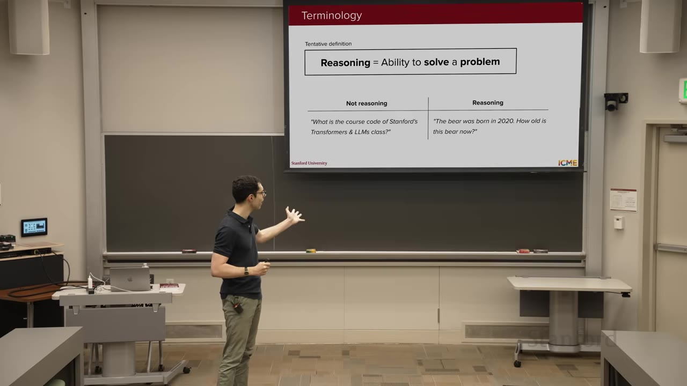
| 分類 | スライドの例 | なぜそう分類されるか |
|---|---|---|
| reasoning ではない | 「Stanford の Transformers & LLMs のコース番号は？」 | 単なる知識の照会。答えは CME 295 と決まっており、多段の思考は不要 |
| reasoning である | 「クマは 2020 年生まれ。2025 年の今、何歳？」 | 複数ステップの推論プロセスが必要。簡単な例だが、はるかに難しい問題も同じ型に入る |
講義での「問題（problem）」は主に 数学問題とコーディング問題を想定している。 「ただし、この能力が他の分野にも波及することが期待される」。 そして reasoning の特徴は multi-step reasoning process。 「試験を受けるときと少し似ている。自明でない問題が来たら、いくつかのステップに分解して、順にたどって、最終的な答えに到達する」。
「コース番号は？」は、記憶している文字列 CME 295 を取り出せば終わる。一方「2020 年生まれのクマは
2025 年に何歳か」では、基準年を確認し、2025 − 2020 = 5 と計算し、誕生日を迎えたかという前提も確認する。
後者のように途中の依存関係がある処理を、この講義では reasoning と呼ぶ。
周辺情報：定義が定まっていないことの実害。 「reasoning」の定義が共有されていないため、業界では「reasoning model」「thinking model」「test-time compute scaling」といった呼称が ほぼ同義で混在している。本レポートでも講義の用語に従い、「答えの前に中間の思考列を生成し、その分だけ推論時の計算を増やすモデル」という 操作的な意味で reasoning model を使う。長い説明が出たこと自体は、各文が答えの原因だったことや、 人間の思考を忠実に写していることの証明にはならない。学術的には「本当に推論しているのか、 訓練で見たパターンを高度に再利用しているだけか」という論争が続いており、講義はそこには踏み込まず、 「解けるかどうか」という機能的な定義を採っている。
4. コアアイデアは Chain of Thought ―「ただし、はるかに大規模に」
Chain-of-Thought（CoT、思考の連鎖）とは、答えだけを一度に出さず、中間手順も token として順に書かせる方法である。 短い指示や見本で CoT を引き出す prompting から出発し、reasoning model では、その振る舞いを学習で大規模に定着させる。
| 方法 | モデルへ与えるもの | 役割と限界 |
|---|---|---|
| Zero-shot CoT | 「段階的に考えて」のような指示だけ | 例を用意せず手順を引き出せるが、基礎モデルにその能力がなければ効かない |
| Few-shot CoT | 問題・途中手順・答えの見本を数件 | 文脈内学習で解き方の型を示せるが、毎回 prompt が長くなり、見本の型にも左右される |
| Reasoning model | 学習済みの方策と、必要に応じた thinking budget | 見本なしでも長い推論を生成できる一方、計算時間・料金・冗長さが増える |
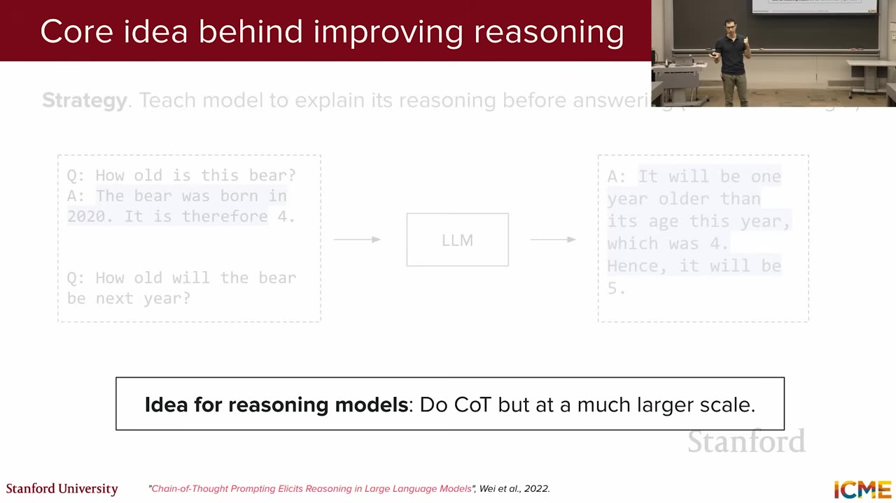
受講生からの鋭い指摘 ― 文脈がなければ解けない問題もある
ここで受講生から 「その問題には文脈（今が何年か）が必要では」 という質問が入り、Afshine は 2 点で答えた。
- preamble。 「LLM には preamble と呼ばれるものがあり、文脈を伝える。日付は典型的に preamble に入れる情報だ」。今日が 2025 年 11 月 7 日である、といった情報は最初から与えられている。
- 持っていない文脈の取得は Lecture 7 の話題。 「今日のところは、それは reasoning model の拡張であって、動作原理の根幹ではないと考える」。
周辺情報：preamble ＝ system prompt の一部。 商用 LLM では、ユーザーの入力より前に「あなたは有用なアシスタントです」「今日の日付は…」といったシステム側の前置きが挿入される。 これを preamble あるいは system prompt と呼ぶ。現在日時、モデル名、利用可能なツール、安全ポリシーなどがここに入るのが一般的で、 「LLM は知識が静的（cutoff date に縛られる）」という弱点のうち、日付のようなごく基本的な情報だけはこの経路で補われている。 それ以外の最新知識を取りに行く仕組み（検索・RAG・ツール利用）が Lecture 7 のテーマになる。
なぜ「考えさせる」と性能が上がるのか ― 2 つの直感
Afshine は理屈を 2 つ挙げた。ここは今回の講義でもっとも本質的な直感なので、丁寧に追う。
直感 ①：難問を「見たことのある問題」に分解する
LLM は next token prediction で訓練され、もっともらしく聞こえる（plausible）ように答える。とても難しい問題は訓練データにほぼ出てこない。そこで問題を扱いやすい小問に分解し、訓練時に見たパターンで各小問を解く。「学生が難問を、勉強中に見た既知のものに結びつけて解こうとするのと同じ」。
直感 ②：token を多く出す＝計算を多く使える
「LLM に token を多く生成させると、それだけ計算を与えていることになる。生成ステップごとに forward pass が丸ごと 1 回走るのだから、回数が増えれば計算量も増える」。ここから compute budget（計算予算）という用語が出てくる。
周辺情報：training scale と test-time compute は別の軸。 直感②は近年 test-time compute scaling（推論時計算のスケーリング） と呼ばれる考え方そのものである。 training-time scale は、学習中のパラメータ数・データ量・計算量を増やしてモデル自体を変える。これに対し test-time / inference-time compute は、学習済みの同じモデルに、1 問を解くときだけ追加の生成や探索をさせる。 前者は学習後の全利用者へ一度に効き、後者は質問ごとに量を変えられるが、そのたびに待ち時間と費用が発生する。 講義スライドの該当セクション名が実際に「Develop "test-time scaling"」となっているのはこのためである。 Transformer は出力 token ごとに全層を通る decoding step を 1 回行うため、長く考えるほど計算は増える。 ただし KV cache、入力 prompt の処理、attention の長さ依存があるので、token 数の比がそのまま厳密な計算量の比になるわけではない。
即答なら 40 token、途中で別解を試して検算するなら 800 token、さらに 16 通り生成して多数決するなら最大でその 16 倍近い decoding が必要になる。モデルの重みは同じでも、後者ほど正解候補を見つける余地が増え、その代わりレイテンシと料金も増える。
新しいパラダイム：出力 ＝ 推論 ＋ 答え
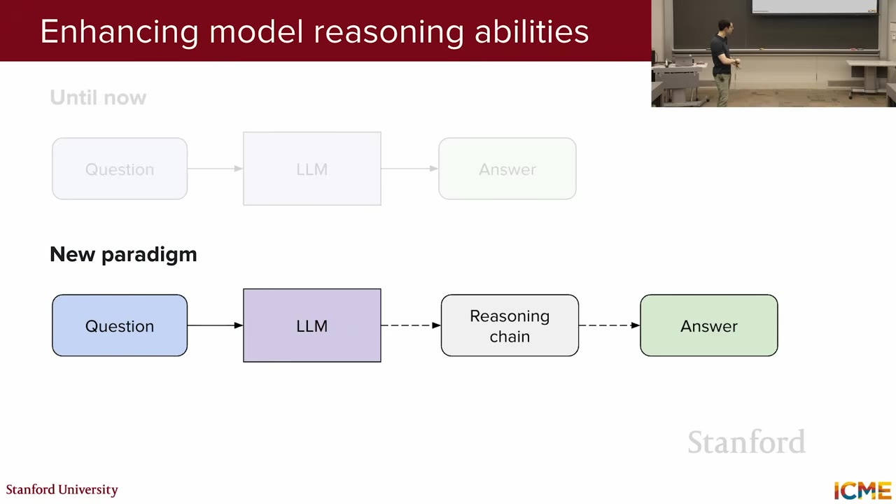
Question → LLM → Answer。新パラダイムでは Question → LLM → Reasoning chain → Answer となり、LLM の出力は「答え」ではなく「推論＋答え」になる。21:40この 1 行が今回の講義全体の前提である。出力に推論チェーンが含まれるという事実が、 後述する「課金の話」「pass@k の話」「出力長が伸びる話」すべての出発点になる。
5. reasoning model のタイムライン ― すべては 2024 年秋以降
2024 年9月の o1-preview 以降、各社は「答える前に考える」製品を相次いで公開した。 中でも DeepSeek-R1 は高い性能だけでなく、検証可能な報酬と GRPO を使う学習手順を論文で示したため、 手法を理解する転機になった。ここでの年表は代表例であり、網羅的な市場史ではない。
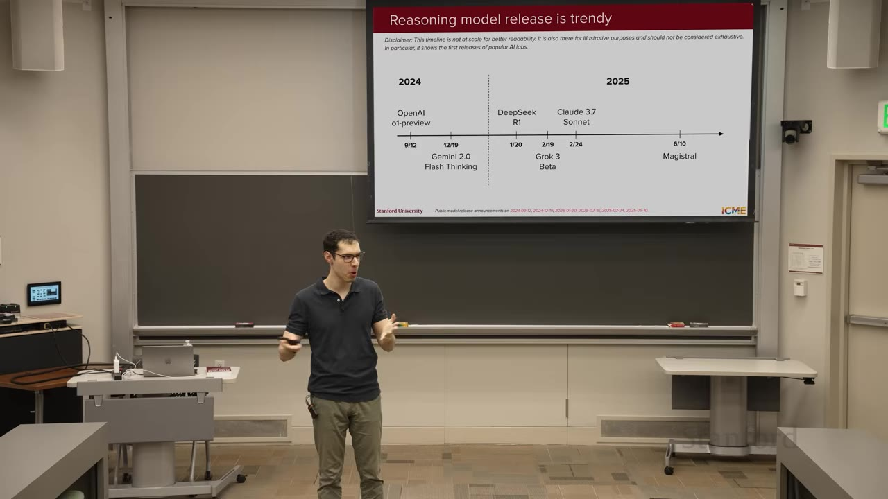
| 日付 | モデル | 提供元 | 講義での言及 |
|---|---|---|---|
| 2024-09-12 | o1-preview | OpenAI | reasoning model が出始めた起点。「その後は全員が『OpenAI はどうやったんだ』と考え込んだ」 |
| 2024-12-19 | Gemini 2.0 Flash Thinking | 各 AI ラボが推論能力の強化に一斉に着手 | |
| 2025-01-20 | DeepSeek R1 | DeepSeek | 「大きな騒ぎになった。OpenAI の推論性能に匹敵し、しかもその手法を論文に書いていたから。2025 年 1 月は大きな瞬間だった」 |
| 2025-02-19 | Grok 3 Beta | xAI | ― |
| 2025-02-24 | Claude 3.7 Sonnet | Anthropic | ― |
| 2025-06-10 | Magistral | Mistral | ― |
Afshine のまとめ：「このタイムラインは網羅的ではないが、これらのモデルがいかに最近のものかを示すためのものだ。要するに 2024 年の終わりに始まった」。 なお、公開日が近いことは各社が同じ学習法を使った証拠ではない。講義が内部レシピまで詳しく追えるのは、主に論文を公開した DeepSeek-R1 である。
6. 使っているモデルが reasoning model かどうかの見分け方
画面に Thinking や「考えた秒数」が出れば、推論用の処理が走った手掛かりになる。 ただし利用者が読む文章は、多くの場合、生の長い推論列ではなく短い要約である。 「表示されない」と「生成されていない」は同じではない。
Thinking、Thought for 6s、Extended thinking といった表示が赤枠で示され、右側に「Thought summary」パネルが出ている。質問はスライド全体を貫くクマの例（"My bear was born in 2020. How old is he now?"）。25:20表示されるのは「思考の要約」であって生の推論チェーンではない
講義スライドは "Thought summary" と "Complete chain of thought usually hidden" の 2 つのラベルを付けている。 Afshine は 「これは仮説だが」 と断ったうえで、生チェーンを見せない理由を 3 つ挙げた。
- 人間にとって完全には可読でない可能性がある。 生の推論チェーンは必ずしも人が読んで分かる形になっていない。
- ユーザーが何ページも読みたくない。
- 推論チェーンがあれば、それを学習データにして能力を模倣したモデルを作れてしまう。 ―― これは講義の最後で扱う distillation の話そのものである。
UI だけでの断定には限界がある。
Thinking は有力な表示上の手掛かりだが、製品ごとに名称と実装が違い、要約文を別処理で作る場合もある。
hidden CoT（非表示の推論列）について確かめるときは、モデル名と提供元の公式仕様、API の usage 情報も合わせて見る必要がある。
周辺情報：3 番目の理由は実際に起きている。 講義の最終節で見るとおり、DeepSeek は R1 が生成した推論チェーンを教師データにして、 Qwen や Llama ベースの小型モデルへ能力を移植（distill）している。 つまり「生の reasoning chain を公開する＝自社モデルの能力を蒸留可能にする」という直接的な競争上のリスクがあり、 主要ラボが要約しか見せないのは経済合理性のある選択といえる。この点で講義の仮説は、講義後半の内容と完全に整合している。
7. 課金の話 ― 推論 token にもお金がかかる
reasoning token は、利用者に見せる最終回答の前に生成される推論用 token である。 画面に全文が出なくても計算と context window を使い、講義で確認した各社の当時の仕様では出力側の料金対象になる。 だから精度だけでなく「何 token でその精度へ達したか」も実用上の性能になる。
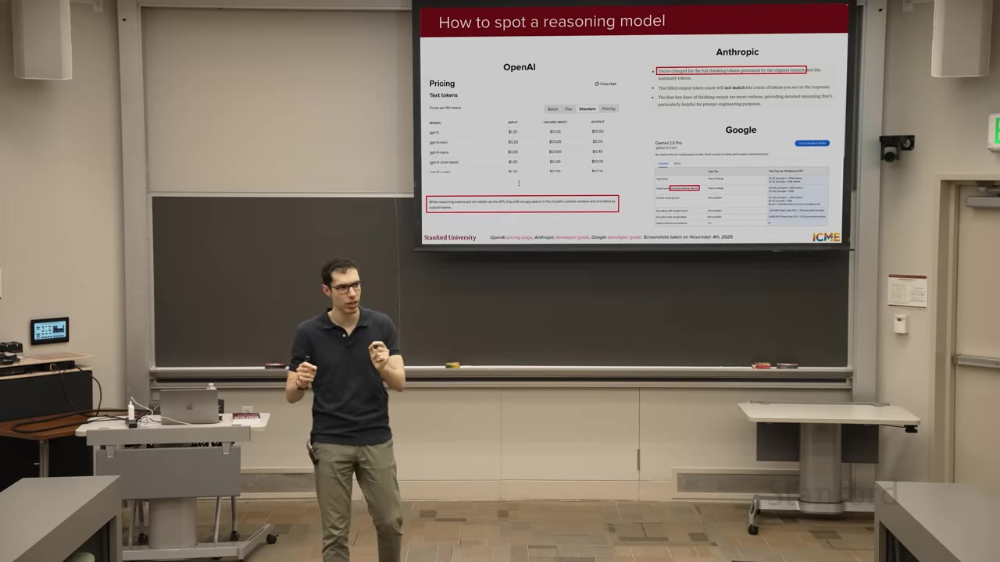
Afshine のまとめ：「これらの API のどれを見ても、ドキュメントには必ず一言二言、output token に課金されると書いてある。そしてその output token には reasoning token も含まれる」。 そして重要な帰結として：
仮に最終回答が 120 token でも、その前に 1,000 reasoning token を生成したなら、利用者が目で読む 120 token だけで コストを見積もると過小評価になる。正確な内訳・単価・context への数え方は提供元とモデルで変わるため、 実際には API の usage と最新の料金表を確認する。
ユーザー側のインセンティブ。 「ユーザーの立場からすると、これは『最小の reasoning token で最大の推論能力を』というインセンティブを生む。たくさん払いたくはないからだ」。 この一文が、後半の length bias（出力長が伸びる問題）と thinking budget の制御という 2 つのトピックの動機になっている。
料金情報は時点付きで読む。 図と引用は講義資料が確認した 2025年11月時点の各社ドキュメントである。 「reasoning token が計算資源を使う」という技術的な点と、具体的な課金区分・単価は分けて考え、後者は利用時の公式文書を正とする。
8. reasoning ベンチマーク ― coding と math
推論の文章を人が一行ずつ読まなくても、コードならテスト、数学なら最終解で正誤を判定できる。 この「候補を機械的に検査できる」性質が、ベンチマークの採点器にも、後で学習に使う報酬にもなる。
Verifier（検証器）とは、生成された候補が条件を満たすか判定する仕組みの総称である。 この節の verifier は、隠しテストや答えの照合という決定的な規則であり、ニューラルネットで点数を予測する reward model とは違う。規則で判定できない自由回答では、学習済みの verifier / reward model が必要になることがある。
coding ベンチマーク
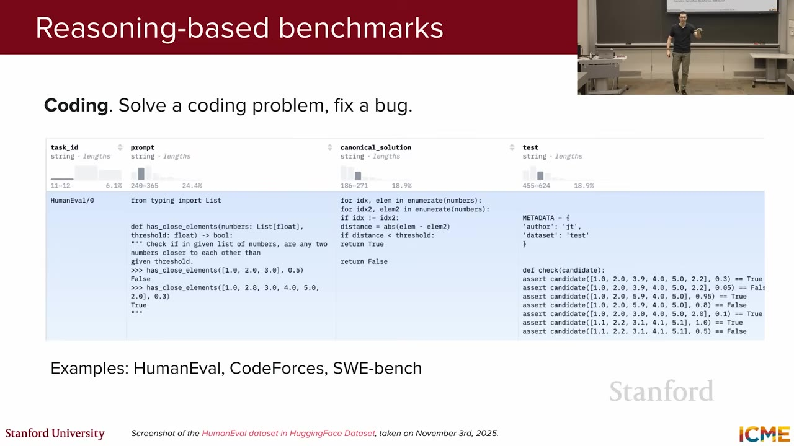
task_id・prompt・canonical_solution・test の列構成が見える。HumanEval/0 は has_close_elements という関数を書かせる問題で、test 列に assert 群が入っている。29:15構造は Problem → Solution → Verification。 「問題が与えられ、テストケースを通せる解を作る。全テストケースを通れば、動く解を得たことになる。これが、生成された応答が正しいかを検証する我々のやり方だ」。
| ベンチマーク | 講義での説明 | 性質 |
|---|---|---|
| HumanEval | 「100 何問かの、人が書いたコーディング問題。だから HumanEval という名前」（正確には 164 問。原論文の表現は "164 hand-written programming problems"） | 関数単位の小問。docstring から実装を書かせ、隠しテストで判定 |
| CodeForces | 「競技プログラミングのサイトから来ている」 | コンテスト形式。難易度が高くレーティングで測れる |
| SWE-bench | 「GitHub の issue から作られた問題群。実際の実務的な問題」 | リポジトリ全体を対象にしたバグ修正。単一関数より遥かに難しい |
math ベンチマーク
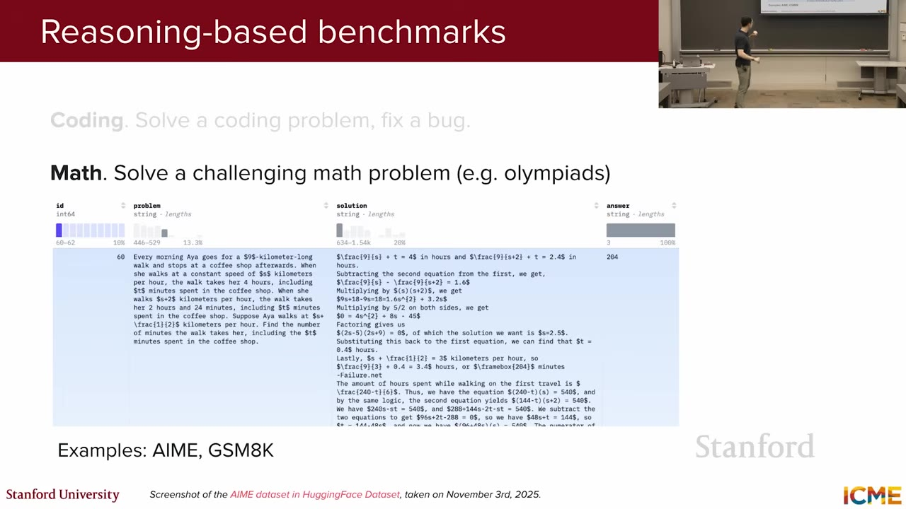
problem（散歩とコーヒーショップの所要時間を問う文章題）・solution（LaTeX の詳細な解法）・answer（204）の列構成。answer 列があるから機械的に正誤判定できることが一目でわかる。31:25
構造は Problem → Reasoning → Ground truth との比較。ポイントは 答えのパースである。
「モデルにパース可能な形で答えを出させる。プロンプトで強制するのだ。ボックス（\boxed{}）に入れさせる人もいる。やり方はいろいろある」。
| ベンチマーク | 講義での説明 |
|---|---|
| AIME | 「米国の数学オリンピック予選に進むための数学試験」。多くのモデルがこれで性能を測る |
| GSM8K | 「小学校レベルの算数問題」 |
周辺情報：\boxed{} というパース規約。
数学ベンチマークで広く使われる慣習が、LaTeX の \boxed{...} で最終解を囲ませる方式である。
評価スクリプトは生成テキストから \boxed{} の中身だけを取り出し、ground truth と文字列 / 数値比較する。
これにより「長い推論の途中に出てきた数字」と「最終解答」を確実に区別でき、推論チェーンの内容には一切触れずに正誤だけを機械判定できる。
後述する verifiable reward は、まさにこの仕組みをそのまま報酬関数に流用したものである。
コード候補を 4 個作り、隠しテストをすべて通った候補だけに 1、残りに 0 を与える。数学なら
\boxed{204} を取り出し、正解 204 と一致すれば 1 とする。同じ判定は、公開時には accuracy、
RL 中には reward として使える。推論文そのものを「もっともらしいか」で採点していない点が重要である。
Verifier が見ていないものは保証されない。 コードが用意されたテストを通っても、未テストの入力で正しいとは限らない。数学でも parser が同値な式を認識できなければ正答を落とし、 逆にデータ漏えいがあれば暗記で高得点になる。検証可能とは「指定された判定を再現できる」という意味で、問題全体の完全な保証ではない。
9. Pass@k ― 「k 回試して 1 回でも当たる確率」
1 回目が外れても、別の解き方を何回か試せば正解が混ざるかもしれない。 Pass@k は「k 個の候補のどこかに少なくとも 1 個の正解がある確率」を測る指標であり、 正解候補を実際に選び出す方法とは分けて考える。
そもそも、なぜ k 回も試すのか
Afshine は 「これはあまり自明ではない」 と前置きしてから理由を説明する。
- 時間をかけて複数答案を作れるユースケースがある。 「正解する確率が上がると分かっているなら、複数答案を生成するために時間をかけてもよい」。
- コーディングのような問題では、答えが正しいか自分で検査できる。 だから「たくさん作って、通ったものを採用する」が成立する。
Best-of-N との違い
Afshine は Lecture 5 の Best-of-N と対比させた。Best-of-N は同じ入力から N 個の候補を生成し、 講義の例では学習済み reward model を verifierとして使い、最高得点の 1 個を選ぶ推論時探索である。 1 回の生成より成功率を上げられる一方、採点器の誤りや追加計算を伴う。Pass@k は選抜手法ではなく、 テストや答え一致という決定的 verifier が使える場面で「k 個中に正解が含まれる能力」を測る評価指標、という違いがある。
| Best-of-N（Lecture 5） | Pass@k（今回） | |
|---|---|---|
| やること | n 個の答案を生成する | k 個の答案を生成する |
| 選び方 | reward model で採点し、最良のものを取る | 決定的で検証可能な方法（テスト通過・答え一致）で正誤を判定する |
| 必要なもの | 学習済み reward model | reward model は不要 |
Afshine の言葉：「同じものと考えていい。ただ reward model を持たず、正しいかどうかを決定的・検証可能に確かめる手段を持っているだけだ」。 ここで「同じ」とは、複数候補を作って評価するという骨格が同じという意味である。 Pass@k は oracle のように「正解が含まれた」と数えるだけで、利用者へ返す 1 個を決めてはくれない。
テスト結果が 失敗・失敗・成功・失敗 なら Pass@4 のその試行は成功である。
Best-of-4 はさらに 4 個を採点して 1 個を返すので、verifier が成功候補を最高点にできなければ最終回答は外れる。
「候補集合に正解がある能力」と「正解を選ぶ能力」は別々に測る必要がある。
周辺情報：この講義でいう「探索」の範囲。 複数候補の sampling、Best-of-N、多数決は、推論時計算を横に広げる最も単純な探索である。 候補の途中状態を枝として展開し、PRM などで枝を採点する tree search や Monte Carlo Tree Search（MCTS）も関連する設計だが、Lecture 6 はそのアルゴリズムを扱わない。 ここでは独立した完成応答の生成と、GRPO による学習が中心である。
素朴な推定がダメな理由 ― 分散が大きすぎる
「k 回生成して、正解数を数えればいい」ではダメである。理由は Afshine の説明どおり： 「k 回しかやらないと、推定値のノイズが非常に大きくなる。純粋な偶然で、あるインスタンスでは 5 回中 3 回正解、別のインスタンスでは 1 回、ということが起きる」。
そこで実際にやるのは次の手順である。
k ではなく n 個の答案を生成
（n は k より大きい）"] --> B["採点する
正解 c 個 / 不正解 n - c 個"] B --> C["問い：この n 個から k 個を
ランダムに選んだとき、
少なくとも 1 個が正解である確率は？"] C --> D["＝ Pass@k の不偏推定量"]
図はクリック（または Enter / Space）で拡大でき、ドラッグ移動・ホイール操作・拡大／縮小／リセットが使えます。
10. Pass@k の黒板導出 ― 「余事象」と「非復元抽出」だけでできている
実験では各問題につき n 個の回答を作り、そのうち c 個が正解だったと数える。 そこから k 個を選ぶときに正解が混ざる確率は、「全部外れる確率」を 1 から引けば求められる。 記号を先に決めてから式を導く。
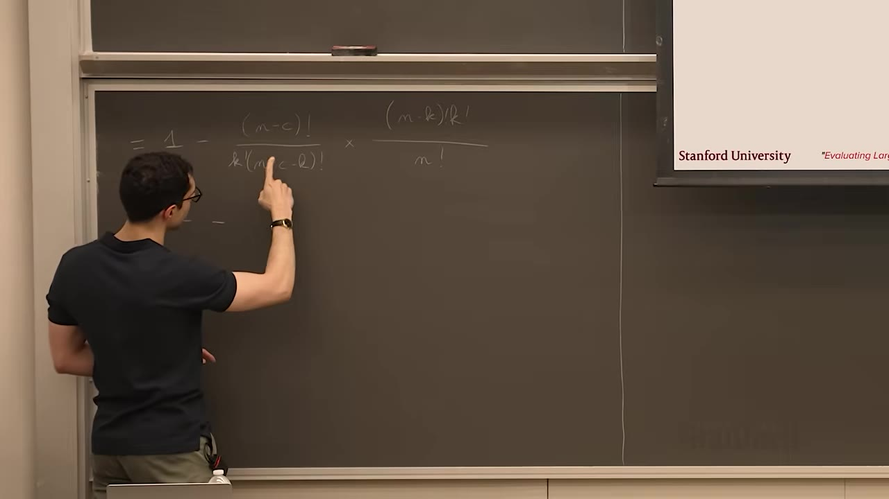
k! を掛けて二項係数の形に整える段階。43:20ステップ 1：余事象を取る
「確率の授業をやったことがあれば、『少なくとも 1 つ』の確率は『全部が外れる確率』の 1 − という、とても一般的なトリックがある」。
ステップ 2：非復元抽出で「全部外れ」を書き下す
n 個の答案のうち失敗は n − c 個。そこから k 個を順に引いて全部失敗になる確率は、条件付き確率の連鎖で書ける。
ステップ 3：階乗にまとめる
ステップ 4：分子・分母に k! を掛けて二項係数にする
「ここでトリックをした。分子と分母に k! を掛けたのだ」。二項係数の定義 C(n,k) = n! / (k! (n−k)!) を使って整理すると：
10 個のうち 8 個が不正解である。3 個の選び方は C(10,3) = 120 通り、
3 個とも不正解になる選び方は C(8,3) = 56 通り。したがって
Pass@3 = 1 − 56/120 = 64/120 ≈ 0.533、約 53.3% となる。
これは観測済みの n 個から重複なしで k 個を選ぶ計算である。
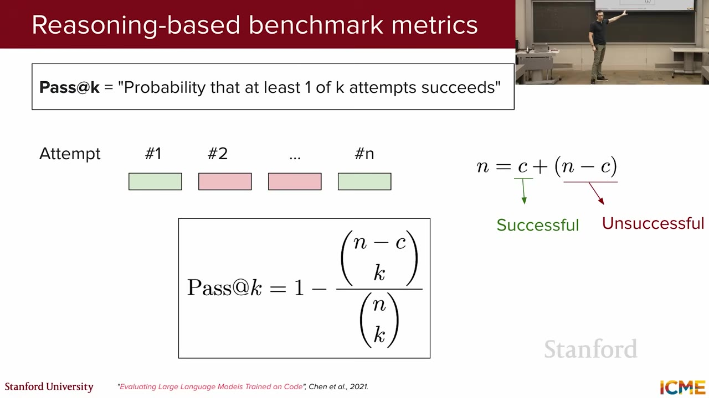
Pass@k = 1 − C(n−c, k) / C(n, k)、右に n = c + (n − c)（Successful ＋ Unsuccessful）の分解。緑が成功、赤が失敗の試行を表す。44:30Afshine の締め：「わざわざ導出したのは、この式が見た目には少し怖いからだ。でも実際にはとても自然で、非復元抽出の考え方だけでできている」。
周辺情報：直感的に確かめる。
式が正しいか、極端な場合で検算すると腑に落ちる。
・c = 0（全部不正解）のとき：C(n−0, k) / C(n, k) = 1 なので Pass@k = 0。当然。
・c = n（全部正解）のとき：C(0, k) = 0（k > 0）なので Pass@k = 1。これも当然。
・k = 1 のとき：C(n−c, 1)/C(n, 1) = (n−c)/n なので Pass@1 = 1 − (n−c)/n = c/n。すなわち単なる正解率。
Afshine が「k に 1 を代入すると大幅に簡約され、成功した試行の割合になる。直感的にも意味が通る」と述べたのはこの計算のことである。
実装上の注意（本レポートの補足）。
この式を素直に階乗で計算すると、n が大きいときに数値がオーバーフローする。
Codex 論文（Chen et al., 2021）は、この点を踏まえて数値的に安定な形の実装を付録に載せている。
考え方は、比 C(n−c,k)/C(n,k) を階乗で計算せず、
prod_{i = n−c+1}^{n} (1 − k/i) という1 に近い数どうしの積に書き換えるというもの。
OpenAI が公開している HumanEval の評価コードでは、この式がそのまま
1.0 - np.prod(1.0 - k / np.arange(n - c + 1, n + 1)) と実装されており、
n - c < k（失敗数が k 未満＝必ず 1 つは当たる）のときは早期に 1.0 を返す分岐が入っている。
自分で pass@k を実装するときはこの形を使うのが安全である。
なお Codex 論文の実験設定は n = 200、k ≤ 100 である。
11. Pass@1、temperature、そして cons@k
候補を 1 個だけ使うなら Pass@1、k 個のどこかに正解があればよいなら Pass@k、 k 個の最頻回答を 1 個返すなら Cons@k と目的が変わる。候補を多様にする temperature と、 多数決でまとめる self-consistency を一続きの処理として理解する。
Pass@1 は「1 回の生成が成功する確率」
「Pass@k の特別な場合が Pass@1 で、これは 1 回の試行が成功する確率と定義される」。 用途の使い分けはスライドに明示されている。
| 指標 | スライドの用途説明 | 実務的な読み方 |
|---|---|---|
| Pass@k | 検査が容易／高いレイテンシを許容できるユースケース向け | CI で自動テストが回せるコード生成など。何回でも試して通ればよい |
| Pass@1 | 単一の生成結果を重視するユースケース向け | チャットのように「1 発目の答え」がそのままユーザーに届く場面 |
| Cons@k | "Consensus at k"。多数決（majority voting）の答えを ground truth と比べるのと等価 | k 個生成して最も多く現れた答えを採用。self-consistency と同じ発想 |
Afshine は cons@k について 「self-consistency のテクニックはこれと非常に近いと考えていい」 と補足し、 「他にはお馴染みの accuracy や exact match といった指標も使われる」 と結んだ。
同じ問題を別々の推論経路で 5 回解き、最終解が 42, 41, 42, 37, 42 なら、
多数決は 42 を返す。ground truth も 42 なら Cons@5 は成功である。Pass@5 は 42 が 1 回でもあれば成功なので、
この例では同じ結論でも、測っているものは違う。
temperature をどう選ぶか ― 受講生からの質問
導出の前に出ていた 「特定の temperature を選ぶのか？」 という質問に、ここで答えが返される。 答えは 「その通り。多様性のために temperature を使う」。 temperature は次 token の候補スコアをどれだけ平らにするかを調整する値で、低いほど上位候補へ集中し、 高いほど低確率の候補も選びやすくなる。
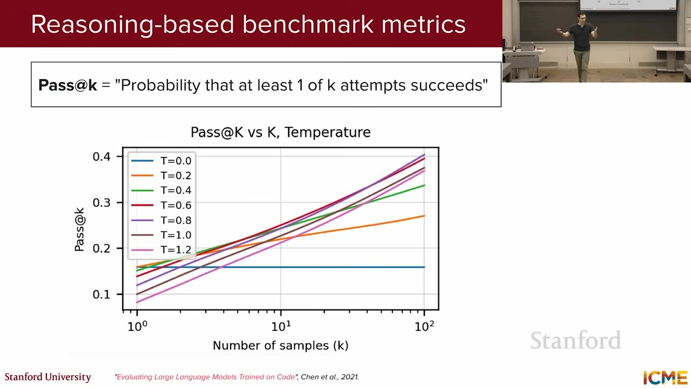
| temperature | 起きること | Pass@k への影響 |
|---|---|---|
| 非常に低い（T = 0） | 解は良質だが多様でない。何度生成しても同じ | k を増やしてもまったく改善しない（グラフは水平） |
| やや低い（T = 0.2） | 多少の多様性が出る | k とともに増加する |
| 中程度（T ≈ 0.4〜0.8） | 多様性と品質のバランスが取れる | 大きな k で最良。「この例では 0.8 が大きなサンプル数で最良の結果を出していると思う」「（小さい k では）0.4 かもしれない」 |
| 高すぎる（T = 1.2） | 多様性は出るが本来ありそうにない token まで出やすくなり性能を害する | この例では極端でベストではない |
結論：「典型的な temperature の選択は、大きすぎず小さすぎず。だから論文では必ず、ベンチマーク結果を出したときの temperature を明記している。これは覚えておくとよい」。
周辺情報：なぜ T=0 だと k を増やしても無駄なのか。 temperature 0 は greedy decoding（各ステップで最尤 token を選ぶ）に相当し、生成が決定的になる。 つまり 100 回生成しても 100 回とも同じ答案が出る。Pass@k は「k 個のうち少なくとも 1 個当たり」だが、 全部同じなら「1 個当たる確率」＝「その 1 個が正解である確率」で頭打ちになる。これがグラフの水平線の正体である。 逆に温度を上げると出力がばらつき、「どれか 1 つは当たる」可能性が上がる代わりに、1 つ 1 つの品質は下がる。 つまり Pass@k における temperature 選択は、典型的な exploration（探索）と exploitation（活用）のトレードオフそのものである。 なお、この直感は次節以降の RL でもそのまま効いてくる。GRPO が同じプロンプトから G 個生成するとき、 全部同じ出力になってしまえば群内の分散がゼロになり、advantage が 0 になって学習信号が消えてしまう。
多数決は正しさの証明ではない。 5 本が同じ誤った前提を共有していれば、誤答が 5 票集まる。temperature を変えても候補の誤りが強く相関している場合、 k を増やす効果は小さい。Cons@k では同数票の扱いも実装で決める必要がある。 多数決は verifier の代用品になりうるが、決定的なテストより弱い。
12. なぜ SFT ではなく RL なのか ― 3 つの理由
長い模範推論を人が大量に書くのは難しいが、数学やコードなら最終結果の正誤は安く測れる。 そこで、まずモデル自身に候補を作らせ、正解した候補を強化する RL が使える。 ただし途中手順を採点する別の設計もあるため、結果監督と過程監督をここで分ける。
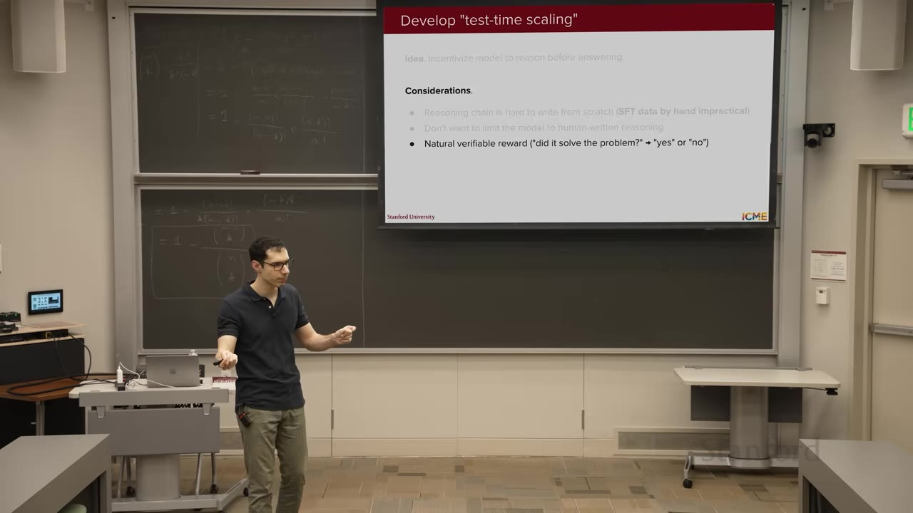
| # | スライドの文言 | Afshine の説明 |
|---|---|---|
| 1 | Reasoning chain is hard to write from scratch（SFT data by hand impractical） | 「SFT には高品質データが必要で、推論チェーンを全部書かなければならない。それがない場合はゼロから書くことになるが、それは非常に難しい」 |
| 2 | Don't want to limit the model to human-written reasoning | 「モデルの推論の仕方は、我々の推論の仕方と違うかもしれない。人間が書いた推論は、モデルに推論を教えるのに最良ではないかもしれない」 |
| 3 | Natural verifiable reward（"did it solve the problem?" → "yes" or "no"） | 「これらの reasoning タスクには、実際に検証可能な、ごく自然な報酬がある。コードならテストが通るか・コンパイルできるか、数学なら答えが ground truth と一致するか。当然のように報酬信号が存在する」 |
結論：「報酬信号はある。SFT はゼロから始めるには良い方法ではない。ではどうする？ RL を試そう」 ―― この一文が講義後半すべての出発点である。ここでいう「ゼロから」は pretrained base model から reasoning の post-training を始めるという意味であり、 言語モデル自体を RL だけで一から学習するという意味ではない。
周辺情報：RLVR という呼び名。 この「reward model を学習せず、正誤の自動判定をそのまま報酬に使う RL」は、近年 RLVR（Reinforcement Learning with Verifiable Rewards） と呼ばれることが多い。 Lecture 5 で扱った RLHF が「人間の選好 → reward model を学習 → その reward で RL」という 3 段構えだったのに対し、 RLVR はreward model を丸ごと省略できるのが最大の違いである。 これは単に楽というだけでなく、Lecture 5 で問題になった reward hacking（学習した reward model の穴を突く行動）を 減らせるという意味も大きい。ただしテストや parser 自体の穴を突く余地は残る。
| 評価する場所 | 仕組み | 例 | 長所と限界 |
|---|---|---|---|
| 最終結果を規則で検証 （R1 系の RLVR） | 学習モデルを置かず、答え一致やテスト通過を 0 / 1 にする | 最終解が 5、全 unit test が成功 | 安く客観的。ただし途中が偶然合ったのか、危険な手順かは見ない |
| ORM Outcome Reward Model | 完成応答全体を見て、最終的な品質を予測する学習済みモデル | 自由回答に「有用さ 0.8」 | 規則化しにくい結果も扱えるが、予測誤差と reward hacking がある |
| PRM Process Reward Model | 推論を手順に分け、各段階が妥当かを予測する学習済みモデル | 式変形1: ○ / 式変形2: × | 誤りの位置を特定し、探索の枝も早く切れるが、step label の作成が高価 |
Process supervision（過程監督）は、各手順に「正しい / 誤り」などの step label（手順ラベル）を付け、その教師信号で PRM や方策を学習する考え方である。 最終結果だけの outcome supervision より密な信用割当ができる一方、正しい別解が多数ある問題では ラベル基準を作ること自体が難しい。DeepSeek-R1 論文はニューラルな ORM / PRM を使わず、 reward hacking、reward model 再学習の資源、パイプラインの複雑化を避けて規則ベースの RLVR を選んだ。
13. 2 つの verifiable reward ― フォーマットと正解
R1-Zero の報酬は、決められた場所に推論と答えを書いたか、最終解が正しいかという 2 つの規則からなる。 形式を守ることと内容が正しいことは別なので、format reward と accuracy reward を組み合わせる。
Reward 1：推論チェーンが存在するか（フォーマット報酬）
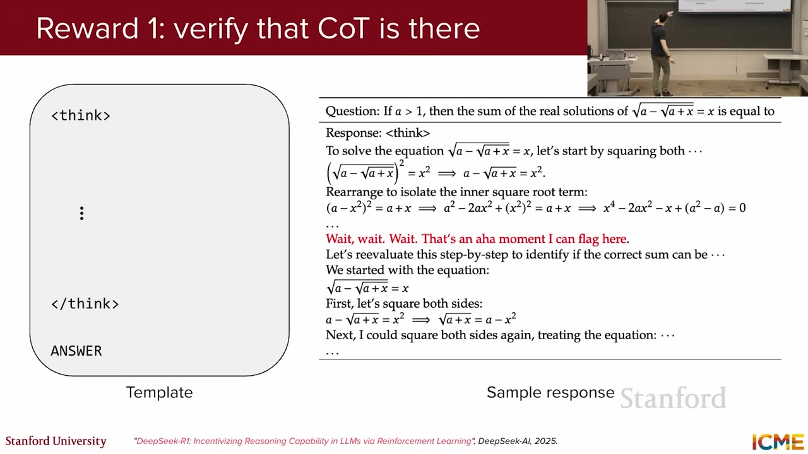
<think> … </think> の後に ANSWER）、右が DeepSeek-R1 論文のサンプル応答。平方根を含む方程式を解く過程で、赤字の "Wait, wait. Wait. That's an aha moment I can flag here." が現れ、そこからモデルが自分で解き直しを始めている。52:00「モデルが推論チェーンを出したかどうかを、単純にチェックすればよい。think の開始・終了 token の存在を確認すればいい。推論チェーンを差し込むためにその token を使えとモデルに指示しておくのだ」。
周辺情報：この赤字は DeepSeek-R1 論文の "aha moment"。 スライド右側のサンプル応答は DeepSeek-R1 論文から引用されたもので、 論文が "aha moment" と名付けた現象の実例である。 論文はこれを「学習の途中で、モデルが最初のアプローチを自分で見直し、より多くの思考時間を割り当てるようになる挙動」と説明している。 重要なのは、この「立ち止まって考え直す」振る舞いを人間が明示的に教えたわけではないという点。 フォーマットと正誤という 2 つの単純な報酬だけで RL を回した結果、創発的に現れた。 後述する budget forcing で「Wait」を差し込むテクニックは、この創発的な挙動を推論時に人為的に誘発しようという発想である。
Reward 2：解が正しいか（正解報酬）
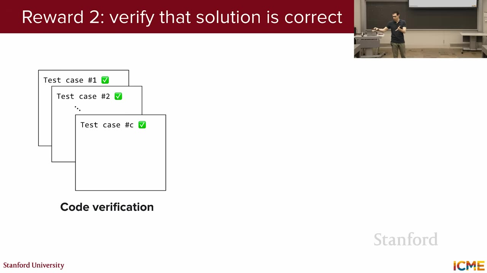
#1〜#c がすべてパス（緑チェック）していれば正解。この後スライドには数学側の検証（推論を経て導いた Answer: 5 を ground truth の 5 と照合）も並置される。52:25「コードなら全ケースで動くかを確認する。数学なら答えが ground truth と同じかを確認するだけ」。
<think>…</think><answer>4</answer> と正しい区切りで誤答した候補は、
format は満たすが accuracy は満たさない。正解 5 を出してもタグが壊れていれば逆である。
実際の重みは実装で決めるが、概念上は「機械可読な推論欄」と「正しい最終結果」の両方を学ばせる。
Format reward は推論の質を採点しない。
モデルが空疎な文章を <think> で囲むだけでも形式点は取れる。
accuracy reward が併用されても、弱いテストや parser の癖を利用する reward hacking は起こりうる。
報酬が測っている範囲を、能力全体と取り違えないことが重要である。
14. 実際に効く ― R1-Zero の学習曲線
DeepSeek-R1-Zero は、事前学習済み V3-Base に reasoning 用 SFT を行わず、規則報酬の RL を直接かけた実験である。 学習曲線から、単発精度と多数決精度が RL step とともに上がることを確認する。
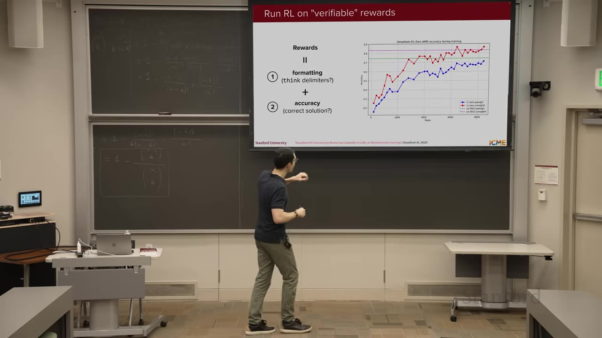
r1-zero-pass@1（青・実線）、r1-zero-cons@16（赤・実線）、o1-0912-pass@1（緑・破線）、o1-0912-cons@64（紫・破線）。R1-Zero の 2 本がステップとともに大きく上昇し、破線で示された o1-0912 の水準に到達している。53:50「RL のステップを進めるにつれて、これらのベンチマークでのモデルの性能が実際に上がる。しかもかなり大きく上がる」。 「モデルに『考えろ』と『正しい答えを出せ』というインセンティブを与えるだけで、この 2 つの検証可能な報酬だけで、実際にかなり有意義に学習できる」。
周辺情報：この曲線の実際の数字。 DeepSeek-R1 論文によれば、R1-Zero の AIME 2024 の pass@1 は学習を通じて 15.6% から 71.0% へ上昇し、 majority voting（cons@k）を使えば 86.7% に達した。論文はこの水準を OpenAI o1-0912 と同等と位置づけている。 reasoning の post-training で SFT を行わず、RL だけでこの上昇が起きたことが、当時この論文が大きな衝撃を与えた理由である。 ただし土台の V3-Base は大規模な事前学習済みであり、「モデル全体を RL だけで学習した」という意味ではない。 グラフに 2 本の線が引かれているのは、pass@1 と cons@16 の両方をプロットしているためで、 §11 で扱った Pass@k / Cons@k がここで実際に使われていることが確認できる。 また図の R1-Zero は cons@16、o1 の破線は cons@64 で、多数決に使う生成数が異なる。 曲線を読むときはモデル名だけでなく sampling budget も見る必要がある。
15. 推論時に「どれだけ考えるか」を制御する
問題ごとに必要な思考量は違う。簡単な問いへ長い推論を使う overthinking を避け、 難問へは十分な inference-time compute を配るため、予算を選ぶ・残量を意識する・生成を延長または終了する・ 言語 token 以外で考える、という 4 方向を比べる。
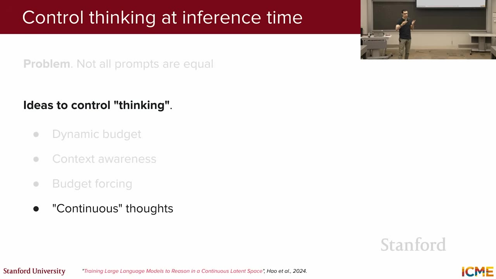
| アイデア | 講義での説明 | スライドが挙げる論文 |
|---|---|---|
| Dynamic budget （動的な思考予算） |
「考えすぎる必要のない質問でモデルが overthink しないようにする。プロンプトに走る軽量な分類器で、高思考タイプか低思考タイプかを判定する、という解がありうる。ただしこれは未解決問題（open problem）に近い」 | Han et al., 2024「Token-Budget-Aware LLM Reasoning」 |
| Context awareness （文脈長の自覚） |
「LLM の context window は有限。考えるときに残りの context 長を意識する必要がある。その制限のせいで、考えすぎることもできない」 | ― |
| Budget forcing （思考の強制延長・強制終了） |
「S1 という論文で導入された用語だと思う。もっと考えさせたいなら、途中で token を差し込んで思考を続けさせる。たとえば Wait のような token。逆に OK, your time is up. Now my answer is のように書けば、モデルに答えを強制できる」 |
Muennighoff et al., 2025「s1: Simple test-time scaling」 |
| "Continuous" thoughts （連続的な思考） |
「モデルは推論チェーンで token を出すが、モデルは言語空間ではない別の空間で考えているかもしれない。thinking token を token ではなく隠れ表現にする、という研究の流れがある。より意味を持ち、より圧縮された表現になりうる」 | Hao et al., 2024「Training Large Language Models to Reason in a Continuous Latent Space」 |
Afshine は 「リンクしたのは 2024 年の論文だが、数日前にもまた別の論文を見た。非常に活発な研究分野だ」 と付け加えた。
周辺情報：3 つの論文が実際に何をしているか。
- s1（budget forcing）。 思考量の上限を課すときは、思考終了デリミタを強制的に付加し、必要なら
Final Answer:を添えて回答段階へ移す。思考量の下限を課すときは、逆に終了デリミタの生成を抑止し、モデルが終わろうとしたところにWaitを挿入して思考を続けさせる。Afshine が口頭で言った通りの仕組みが、そのまま論文の手法名になっている。学習データs1Kは高品質な「質問・推論トレース・答え」の 1,000 例のみ。 - Coconut（continuous thought）。 通常の生成では、最終層の隠れ状態を語彙上の確率分布に変換して 1 token を選び、その token の埋め込みを次の入力にする。Coconut はこの 「token に decode する」段階を飛ばし、直前位置の最終隠れ状態をそのまま次位置の入力埋め込みとしてフィードバックする。言語に落とさない分、情報が失われず圧縮も効く、というのが狙いである。
- TALE（Token-Budget-Aware LLM Reasoning）。 プロンプトに token 予算を組み込むことで冗長な思考を抑える枠組み。arXiv の初版は平均 68.64% の token 削減で精度低下は 5% 未満と主張していた（現行版では TALE-EP が約 67% 削減・低下 3% 未満、TALE-PT が約 50% 削減という記述に更新されている）。
「2 + 3」は低予算で即答し、証明問題は高予算で複数の方針と検算を許す。
途中で context の残りが少なくなれば最終回答へ移り、まだ余裕があり自己矛盾を検出したら Wait で再検討する。
目的は常に長くすることではなく、問題の難しさに合う計算を使うことである。
制御にもトレードオフがある。 強制終了は必要な検算を切り、強制延長は同じ内容の反復や誤った前提への固執を増やしうる。 軽量分類器が難易度を誤れば予算配分も外れる。continuous thought は圧縮の可能性がある一方、 人が途中経過を読んで点検しにくくなる。講義が dynamic budget を open problem とした理由である。
ここまでのまとめ（Afshine の言葉）。 「持ち帰ってほしい takeaway は、ゼロから始めるなら、モデルにもっと考えさせるインセンティブを与えるには RL を使うということだ」。
16. GRPO ― Group Relative Policy Optimization
Group Relative Policy Optimization（GRPO、群相対方策最適化）は、同じ問題へ複数回答を作り、 群の中で良かった回答を増やす RL 手法である。PPO が必要とする critic の代わりに群平均を基準にするため、 大きなモデルを 1 個減らせる。もとは 2024 年の DeepSeekMath で提案され、後に DeepSeek-R1 で使われた。
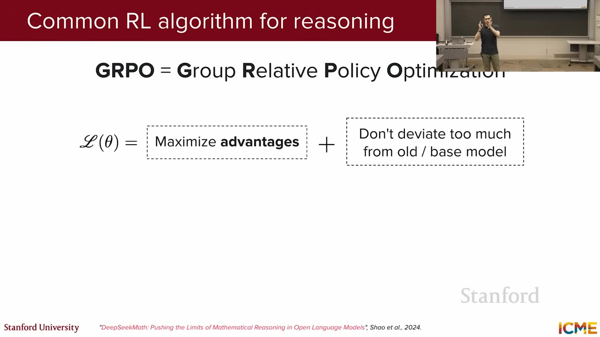
GRPO は PPO と同じ 2 つの目的を持つ。
- advantage の最大化。 「advantage は、出している答えが期待より良いかどうかを教えてくれるもの」。
- old model（1 つ前のイテレーション）や base model（SFT 段階のモデル）から離れすぎない。
そして、決定的な違いは 1 点だけ。 「その違いは advantage をどう計算するかにある」。スライドにも "Big difference compared to PPO!" と書かれている。
同じ数学問題 q から G = 4 個の completion（完成応答）を生成し、
verifier がそれぞれへ 1, 0, 0, 0 の報酬を返す。GRPO は「1 を取った回答は、この問題の平均より良い」と判断し、
その回答を出しやすくする。GRPO 自体が数学を教えるのではなく、報酬が示す良い振る舞いを増やす最適化法である。
PPO の advantage ―「value function」という重荷
PPO がどうやって advantage を求めていたかを Afshine が改めて整理する。
- プロンプトと 1 つの完成応答があり、その 2 つから reward が得られる（completion レベル）。
- それに加えて、学習時に同時に訓練しているもう 1 つのモデルを使う。それが value function。
- value function の目的は 「その policy に従って token を生成し続けたとしたら、報酬はいくらになるかを予測すること」。
- この 2 つから GAE（generalized advantage estimation）という「非常に複雑な式」で advantage を求める。「実際には見なかった」（Lecture 5 でも扱っていない）。
PPO の大きな制約。 「大きな制約は、policy と一緒に value function を訓練しなければならないことだった。これが大きなボトルネックだ」。
周辺情報：value function（critic）とは何者か。 RL の教科書的な用語では、value function は「ある状態から先、この policy で行動し続けたときに得られる報酬の期待値」を返す関数である。 LLM では「この途中まで書いた文章から先を書き続けたら、最終的にどれくらいの報酬が得られそうか」を各 token 位置で予測するモデルにあたる。 advantage はざっくり「実際に得られた報酬 − value function の予測値」であり、 「期待より良かったか / 悪かったか」を表す。これが「期待通り」なら 0 になるので、 「たまたま簡単な問題だったから報酬が高い」といったノイズを差し引ける（＝勾配の分散が下がる）。 問題は、この value function 自体が policy と同規模のニューラルネットであること。 LLM の RL では policy が数百億パラメータなので、critic も同程度のメモリを食う。GRPO が解こうとしたのはここである。
17. GRPO の核心 ― 「群」の平均をベースラインにする
GRPO は 1 問につき G 個の完成応答を採点し、「自分の報酬 − 群の平均」を基準に各応答の良し悪しを決める。 元の定義ではさらに群の標準偏差で割る。これが group-relative advantage であり、 学習済み critic を使わずに「期待より良いか」を近似する。
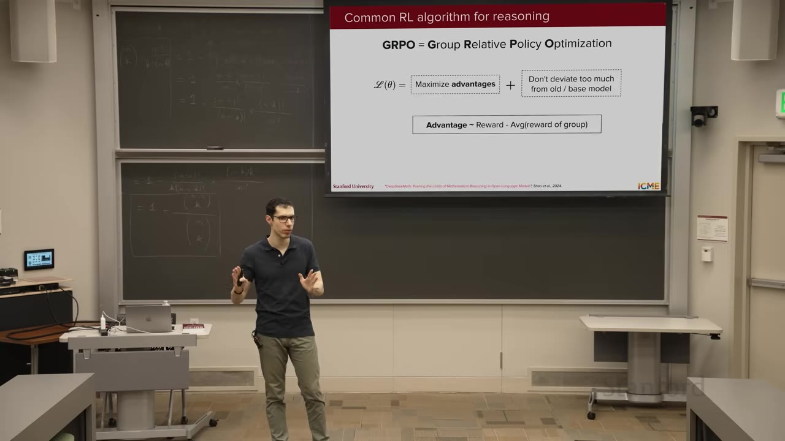
「同じプロンプトに対して複数の completion を生成する。プロンプトは共有だ。各 completion について、その報酬と他の completion の報酬との相対的な尺度を測る。これによって『群の残りと比べてどれだけ良いか／悪いか』が分かる。これが我々の advantage になる」。
ちなみに、これが最善のやり方ではないかもしれない、というのは後で見る」
平均は 0.25、母標準偏差は約 0.433 である。正解した 1 本の advantage は
(1 − 0.25) / 0.433 ≈ +1.73、各誤答は
(0 − 0.25) / 0.433 ≈ −0.58 になる。正答の token は増やす方向、
誤答の token は減らす方向へ更新される。
細かいが重要な読み違いポイント。 Afshine は口頭で「他の completion の報酬の平均と比べる」と言っているが、
スライドの式も原論文（DeepSeekMath）の定義も、平均・標準偏差は 自分自身を含む群 G 個すべての報酬にわたって計算する
（mean(r_1, …, r_G) / std(r_1, …, r_G)）。
「自分を除いた残り」を使う leave-one-out 方式ではないので、実装するときは注意したい。
なぜ「群との比較」で十分なのか ― 難易度の吸収
受講生の 「なぜそうするのか」 という質問に、Afshine は 2 段で答えた。
- 歴史的な理由。 「従来の RL アルゴリズムは、LLM が登場する前に開発された。PPO は 2017 年の手法だと思う。だからそこで出てくる量は、ある種のセットアップでは非常に意味があっても、言語の世界では意味を持たないかもしれない」。
- 設計上の狙い。 「著者たちがやりたかったのは、訓練しなければならない非常に高価な joint model を持たずに、相対的な方法を別の形で考えることだ」。
そして、もっとも直感的な説明がこれである。
「たとえば、かなり簡単な数学問題があったとする。そこで高い報酬が出たとしても、それはそもそも問題が簡単だったからかもしれない。 逆に非常に難しい問題で正解を出せたなら、その token をもっと大きく上方修正したい。難問への良い解を見つけたのだから。 それを advantage に組み込みたいのだ」
周辺情報：これは「ベースライン」という古典的アイデアの応用。 方策勾配法では、報酬から任意のベースライン（行動に依存しない量）を引いても勾配の期待値は変わらず、分散だけが下がるという定理がよく知られている。 PPO は「学習した value function」をベースラインに使い、GRPO は「同じ問題に対する他の生成の平均報酬」をベースラインに使う。 後者は学習不要でその場で計算できるぶん、モデル 1 個分のメモリと学習コストが丸ごと消える。 DeepSeekMath 論文はこの点を「GRPO は critic model を放棄する（foregoes the critic model）」と明記している。 代償は「同じプロンプトから G 個生成しなければならない」という生成コストだが、 LLM の推論はバッチ化しやすいため、critic を訓練するより安上がりというのが実証的な結論になっている。
ここで押さえておきたい伏線。 標準偏差 std で割る処理は、後の §22 で
「難易度に対するバイアス」として問題視される。ほぼ全滅・ほぼ全問正解の群では std が小さく、
わずかな例外を強く拡大する。なお全回答の報酬が完全に同じなら分子も 0 で、相対的な学習信号はない。
実装はゼロ除算を避けるため epsilon を加える、またはその群を除外する。Afshine 自身「最善ではないかもしれない」と予告している。
18. GRPO と PPO を図で並べる
PPO と GRPO は、候補を採点し、良い出力を増やし、元のモデルから急に離れないよう制限する点では同じである。 違いは期待値の作り方で、PPO は value model、GRPO は同じ問題への回答群を使う。 図に登場する 4 種類のモデルを、学習対象・固定・不要に分けて読む。
GRPO の流れ
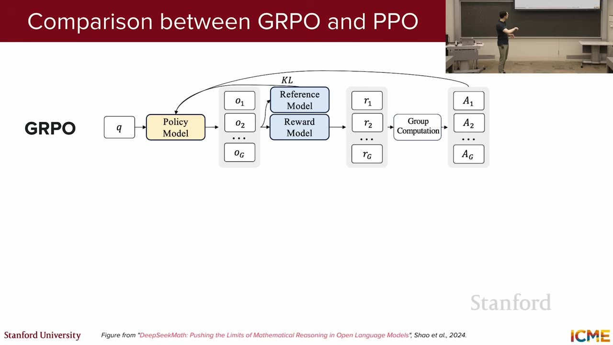
q（クエリ）→ Policy Model → o_1 … o_G（G 個の completion）→ Reward Model → r_1 … r_G → Group Computation → A_1 … A_G。上部の曲線は Reference Model との KL が Policy Model に戻るフィードバック。67:30原図の “Reward Model” は一般形の箱。 DeepSeekMath の図は任意の報酬源を置ける一般的な GRPO を描いているため、このラベルがある。 本講義の reasoning RLVR へ当てはめると、ここは学習済み reward model ではなく 答え一致やテストを実行する検証スクリプトに置き換わる。図の箱名だけから「R1 が reward model を訓練した」と読んではならない。
（学習対象）"] PM --> O["o_1, o_2, …, o_G
G 個の completion"] O --> RM["Reward Model
（reasoning では
検証スクリプトで代用）"] RM --> R["r_1, r_2, …, r_G"] R --> GC["Group Computation
A_i = (r_i − mean) / std"] GC --> PM O --> REF["Reference Model
（凍結）"] REF -.->|KL penalty| PM
図はクリックで拡大できます。
PPO の流れ
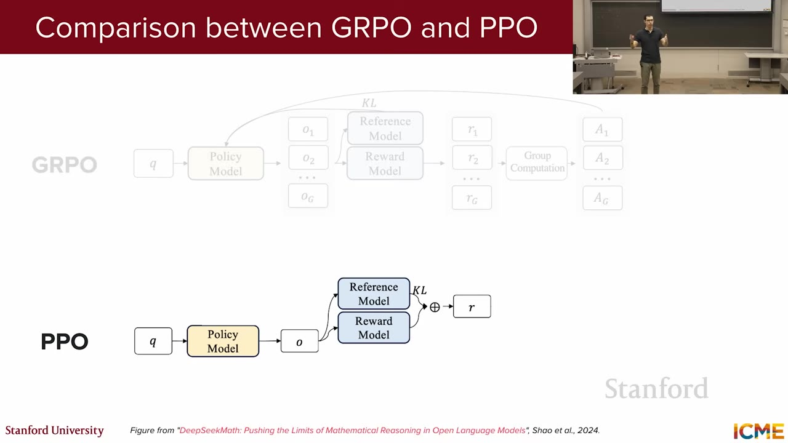
q → Policy Model → o（1 つだけの completion）→ Reference Model と Reward Model → KL と報酬を合成して r。GRPO と違い群がなく、代わりに（図の続きで）Value Model が登場する。68:50PPO 側で、講義がここで初めて明かした実装上の詳細が 2 つある。
- KL 項は報酬に混ぜ込まれる。 「実装の観点では、KL divergence 項を報酬に組み込むのが普通だ。per-token の報酬のような形になり、最後の token だけが completion 全体の報酬を持ち、他の全 token は KL divergence 項を持つ」。
- value function は per-token。 「value function は per-token で、policy に従って残りの系列を生成し続けたときの報酬を定量化しようとする」。
訓練するモデル・凍結するモデル
Afshine が 「これが key difference だ」 と強調した比較表。
| モデル | GRPO | PPO | 備考 |
|---|---|---|---|
| Policy model | 訓練する | 訓練する | これが最終的な成果物 |
| Value model（critic） | 不要 | 訓練する | ここが最大の差。policy と同規模のモデルを 1 個減らせる |
| Reference model | 凍結 | 凍結 | KL の基準。SFT モデル |
| Reward model | 凍結 | 凍結 | reasoning のケースでは、そもそも存在しない |
reasoning では reward model すら要らない。 「注意すべきは、reasoning のケースでは実際には reward model を訓練していないことだ。 解が正しいかどうかを我々が判定できるからだ。検証可能な報酬があるので、reasoning のケースでは reward model はまったく存在しない。 これは GRPO も PPO も同じだ」
周辺情報：メモリ視点で数えてみる。 典型的な RLHF では、policy・value・reward・reference の 4 つのモデルを同時にメモリに載せる必要がある（Lecture 5 で「PPO の 4 モデル問題」として扱われた）。 しかも policy と value は学習対象なので、パラメータ本体に加えて勾配と Adam の状態（1 次・2 次モーメント）を保持する必要があり、 推論だけの reference / reward より 1 モデルあたりのメモリ消費が数倍大きい。 GRPO ＋ verifiable reward の組み合わせでは、これが「学習する policy 1 つ ＋ 凍結した reference 1 つ」まで減る。 reasoning 向け RL が急速に普及した現実的な理由の 1 つが、この実装とインフラの単純さである。
19. 損失関数を並べて読む ― 講義最難関パート
数式全体を一度に読む必要はない。まず「新旧 policy の確率比」「更新を制限する clip」 「群相対 advantage」「reference からのずれを罰する KL」の 4 部品に分ける。 記号を定義した後、1 token の数値例で更新の向きを確かめる。
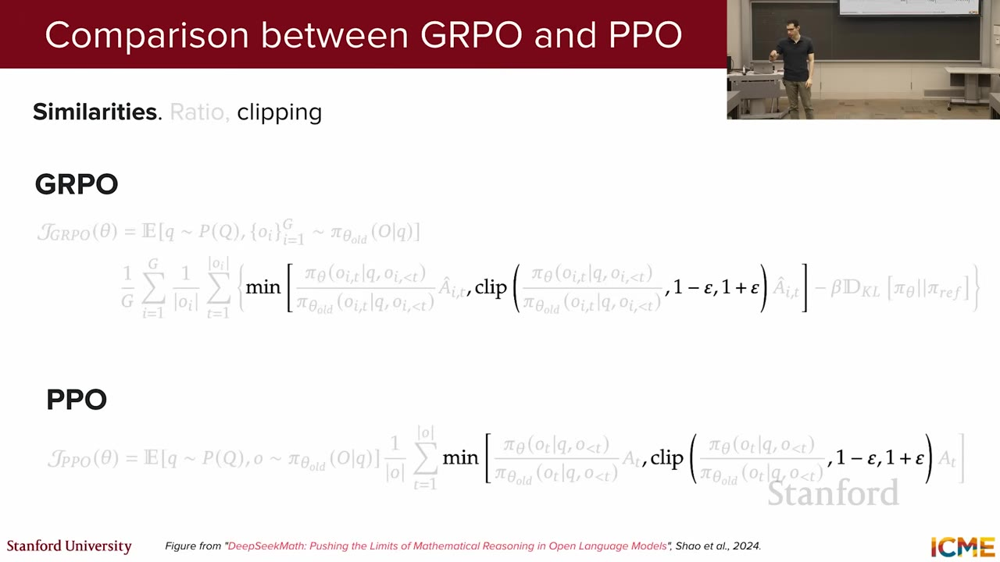
共通点
| 共通点 | 中身 |
|---|---|
| ① Ratio（比） | どちらも pi_theta(現在の policy) / pi_theta_old(1 つ前の policy) という確率比の上で動作する |
| ② Clipping（切り詰め） | どちらも更新をある領域内に留める。「advantage が正のときに損失がどう見えるか、負のときどうか、というチャートを Lecture 5 で見た。ぜひ見直してほしい」 |
相違点
| 相違点 | GRPO | PPO |
|---|---|---|
| ① KL penalty の置き場所 | 目的関数に明示的な項として入っている（− β D_KL[pi_theta || pi_ref]） | 典型的には advantage の中（実装上は報酬の中）に混ぜ込まれている |
| ② advantage の推定法 | 各 completion の報酬を、群の他の completion と比べて算出 | 報酬と value model を使って GAE で算出 |
周辺情報：GRPO の目的関数を、記号ごとに分解する。
原論文（DeepSeekMath, Shao et al., 2024）の式をプレーンテキストで書き下す。
q は問題、G は同じ問題から作る回答数、o_i は i 番目の回答、
|o_i| はその token 数、t は token 位置である。
pi_θ は更新中の policy、pi_θ_old は候補を生成した旧 policy、
pi_ref は固定した参照モデル、ε は clip 幅、β は KL の強さを表す。
以下では報酬 r_i と混同しないよう、確率比を ρ と書く
（原論文やスライドでは比にも r を使う）。
× (1/G) Σ_{i=1..G} (1/|o_i|) Σ_{t=1..|o_i|} {
min[ ρ_{i,t}(θ)·Â_{i,t} , clip( ρ_{i,t}(θ), 1−ε, 1+ε )·Â_{i,t} ]
− β·D_KL[ pi_θ ‖ pi_ref ]
}
ρ_{i,t}(θ) = pi_θ(o_{i,t} | q, o_{i,<t}) / pi_θ_old(o_{i,t} | q, o_{i,<t})
(1/G) Σ_i： 同じ質問qから生成した G 個の completion にわたる平均。(1/|o_i|) Σ_t： 1 つの completion の中の token にわたる平均。|o_i|は i 番目の completion の token 数。この項が §20〜21 で「悪いインセンティブ」の犯人になる。min[ r·Â , clip(r,1−ε,1+ε)·Â ]： PPO-Clip と同じ形。ratio が[1−ε, 1+ε]の外に出たら、advantage を掛ける前に切り詰める。− β D_KL[pi_θ ‖ pi_ref]： reference（SFT）モデルから離れないための明示的なペナルティ。βがその強さ。
ある token の確率が旧 policy で 0.10、現在 0.15 なら ρ = 1.5。
ε = 0.2 なら許容帯は [0.8, 1.2] である。
advantage が正でも、clipped 側は 1.2 までしか利益を数えないため、すでに大きく上げた token をさらに押し上げる誘因が止まる。
advantage が負の場合は min の働き方が反対側の過大更新を抑える。
advantage は outcome supervision の場合、completion 内の全 token で同じ値（Â_{i,t} = (r_i − mean(r)) / std(r)）になる。
つまり「この応答は群の中で良かった／悪かった」という 1 つの数値が、その応答の全 token に一律で配られる。
PPO のように token ごとに value function で細かく配分するのではなく、ざっくり応答単位で配るのが GRPO の割り切りである。
なお KL の計算には、論文が「unbiased estimator」と呼ぶ次の形（通称 k3 estimator）が使われる：
pi_ref/pi_θ − log(pi_ref/pi_θ) − 1。これは常に非負になるため、損失として扱いやすいという性質がある。
DeepSeekMath-RL の実験では、1 つの質問につき G = 64 の出力をサンプルしている。
Afshine の「これだけ持ち帰れ」まとめ。 「これらのアルゴリズムは、RL 段階でモデルをチューニングするためだけに存在する、と自分に言い聞かせればいい。 PPO は preference tuning の枠組みで多用され、GRPO は reasoning ベースの学習で一般的に使われる。 そしてGRPO が PPO と違うのは、value function を必要としない点。 GRPO は他の completion との比較で advantage を計算する。PPO は報酬と value を取り、2 つを比べて advantage を得る。 これが腑に落ちていれば、もう十分に良い」
そして講義は率直にこう続く。「これは非常にテクニカルだ。おそらくクラス全体で一番難しいパートだろう。 消化に時間がかかるのはまったく普通のことだ」「録画を何度か見直すことをお勧めする」。
20. 出力長が伸び続ける現象 ― 何が起きているか
R1-Zero の学習初期には、長く考えるほど精度も上がった。しかし精度が頭打ちになった後も、 平均応答長は約 1,000 から 10,000 token 超へ伸び続けた。 有用な検算と無駄な長文化を分けなければ、性能が同じまま料金と待ち時間だけが増える。
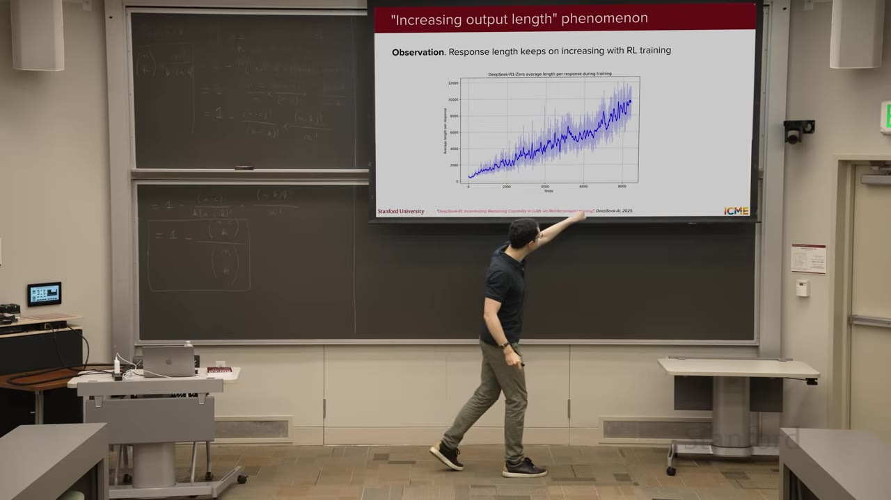
Afshine が指摘した「引っかかり」はこうである。
- RL 学習が進むと、出力（主に推論チェーン）がどんどん長くなる。これは経験的な事実。
- 前半ではこの長さの増加が性能の向上と相関している。だから一見よいことに見える。
- しかし、ある段階で性能は頭打ちになるのに、出力長だけは伸び続ける。
「多くの人がこのチャートを見て、『何かおかしいことが起きているぞ』となった」。
相関を 2 つの区間に分けて読む。 前半の「長さと精度が一緒に増える」区間だけなら、追加の test-time compute が役立ったと解釈できる。 問題は後半の「精度は横ばい、長さだけ増える」区間である。したがって結論は 「長い推論は常に悪い」ではなく、限界便益がなくなった後の token を減らす必要があるとなる。
ここから先の注意書き（講義から）。 「小さな警告だが、これも少しテクニカルだ。1 つの数式があって、それを可能な限り説明しようと思う。少し数学がある」。 本レポートではこの部分をもっとも丁寧に分解する。
21. 犯人は 1/|o_i| ― 「長い間違いのほうが得」という悪い設計
素の GRPO は各回答の token 損失を、その回答の長さ |o_i| で割って平均する。
すると同じ負の advantage でも、長い誤答に含まれる各 token は弱くしか罰されない。
数式の並べ替えから、この length bias が生じる向きを確かめる。
ステップ 1：目的関数を「日本語」で読む
Afshine はまず数式を平易な言葉に置き換えた。
| 記号 | 意味 |
|---|---|
J | objective function（目的関数）。GRPO はこれを最大化する |
| 比（ratio）の部分 | 「モデルが old policy と比べてどれだけ変わったか」 |
| clip の部分 | 「更新が大きくなりすぎないよう防ぐ機構」 |
| 右側の KL 項 | 「モデルが base model（reference model）から離れすぎないようにする」 |
外側の Σ（i = 1..G） | 群の中の completion 番号にわたる和 |
内側の Σ（t = 1..|o_i|） | その出力の token 番号にわたる和 |
「プロンプトがあれば複数回サンプルして複数の completion を得る。そしてそれを出力の全 token について行う。だから 2 重和になる」。
ステップ 2：1/|o_i| を内側の Σ の中に「移動」させる
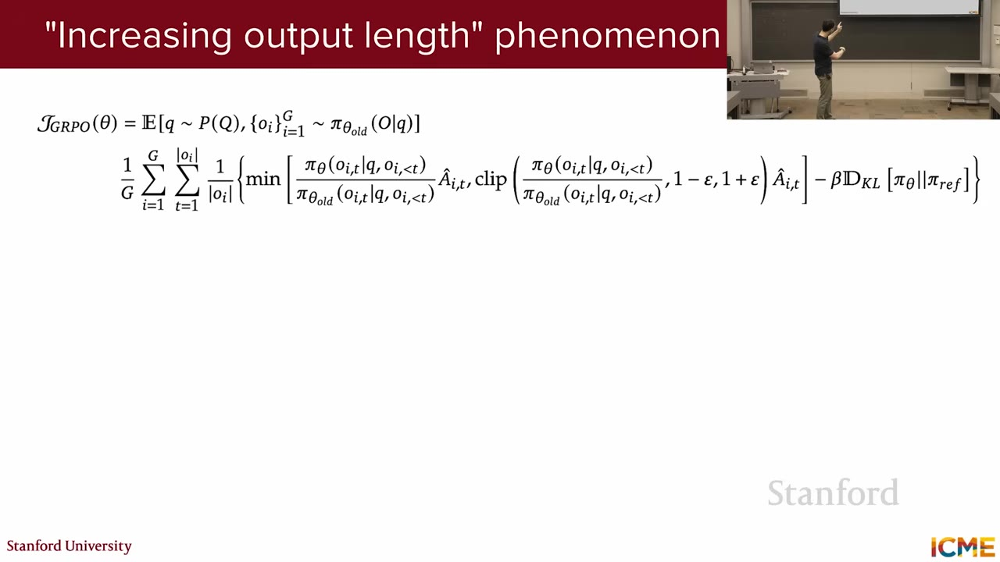
1/|o_i| を 2 つの総和記号の後ろに移して、token ごとの寄与に掛かる係数として見えるようにしている。81:30
「私が何をしたか分かるだろうか。1/|o_i| をここに移しただけだ。なぜそうしたか説明する」。
| 因子 | 何に依存するか | 値の大小 |
|---|---|---|
1/|o_i| | その token がどの出力に属しているかだけ | 非常に長い出力なら小さい数。短い出力なら大きい数 |
| その右側の項（min/clip の部分） | token 固有 | ― |
ここが核心の一文。 「言い換えると、ある token が目的関数に対して持つ寄与は、その token が属する出力の長さに依存する。 token が短い文の中にあれば、長い文の中にあるより大きな重みを持つ」
同じ負の advantage を持つ 100 token の誤答と 1,000 token の誤答なら、
各 token に掛かる長さ係数はそれぞれ 1/100 = 0.01 と 1/1000 = 0.001。
後者の 1 token 当たりの下方更新は、他の条件が同じなら 10 分の 1 である。
これは回答全体の勾配が単純に 10 分の 1という意味ではないが、長い誤答の個々の token が残りやすい方向の偏りを示す。
ステップ 3：advantage の符号と組み合わせて考える
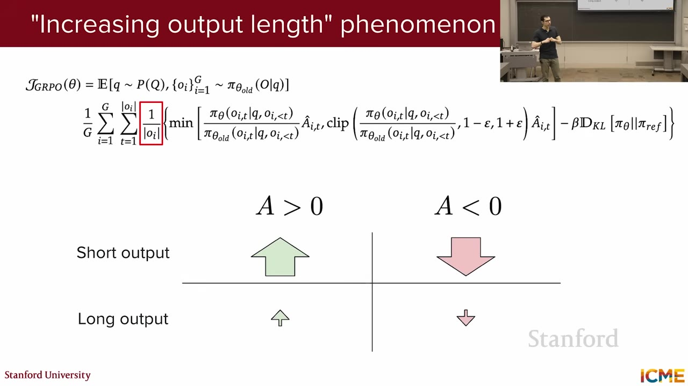
A > 0 / A < 0）と出力長（Short / Long）の 2×2。短い出力ほど矢印（更新量）が大きい。緑の上向き矢印が確率の引き上げ、赤の下向き矢印が引き下げ。スライドはこの構図に "Bad incentive!" と書き添えている。83:50| advantage が正（良い出力） | advantage が負（悪い出力） | |
|---|---|---|
| 短い出力 | その token の確率を大きく上げる | その token の確率を大きく下げる |
| 長い出力 | 確率を小さくしか上げない | 確率を小さくしか下げない（＝お咎めが軽い） |
Afshine の説明をそのまま引く。
「advantage が正の出力の中にある token なら、その token が再び出る確率を上げたい。しかも短い文のほうが、長い文よりずっと大きく上げることになる。 同時に advantage が負のとき ―― これは『そうしたい』のではなく、この定式化がそうなっているだけだが ―― 短い出力の中の token は、長い出力の中にあるときよりさらに大きく下方修正される。
そしてこれが問題だ。これは悪いインセンティブである。 なぜならモデルにこう伝えていることになるからだ：『短くて悪い文は、長くて悪い文より悪い』と。」
言い換えると。 「出力長で割るという行為は、token が短い出力の中にあるときにさらに強く下方修正するようモデルを誘導している。 結果として、モデルは短くて悪い出力より、長くて悪い出力を好むようになる。 これが、出力長がどんどん大きくなっている原因だと人々は仮説を立てている」
周辺情報：Dr. GRPO 論文による同じ主張の言い方。
この現象は Liu et al., 2025「Understanding R1-Zero-Like Training: A Critical Perspective」で
response-level length bias と名付けられている。論文の説明は Afshine とまったく同じで、
「負の advantage を持つ応答では、長い応答ほど大きな |o_i| で割られるため
longer responses are penalized less（長い応答ほどペナルティが軽い）となり、
結果として誤答の中でも長いものを選好する方向に更新される」というものである。
つまり「長く間違えたほうが叱られない」という、報酬設計のバグに近い性質が
GRPO の定義そのものに埋め込まれていた、ということになる。
22. 修正案 ― DAPO と Dr. GRPO
length bias を消すには、回答ごとに 1/|o_i| を掛けるのをやめればよい。
DAPO は群全体の token 数で一度だけ正規化し、Dr. GRPO は長さに依存しない定数へ置き換える。
どちらも各 token の寄与を、所属する回答の長さから切り離す。
時系列の注意。 Afshine はこれらを 「GRPO の研究に対して、この数か月で人々が行った拡張」 と紹介している。
どちらも 2025 年 3 月の論文であり、2025 年 1 月に公開された DeepSeek R1 のレシピには含まれていない。
R1（§26）が使っているのは、あくまで 1/|o_i| を持つ素の GRPO である。
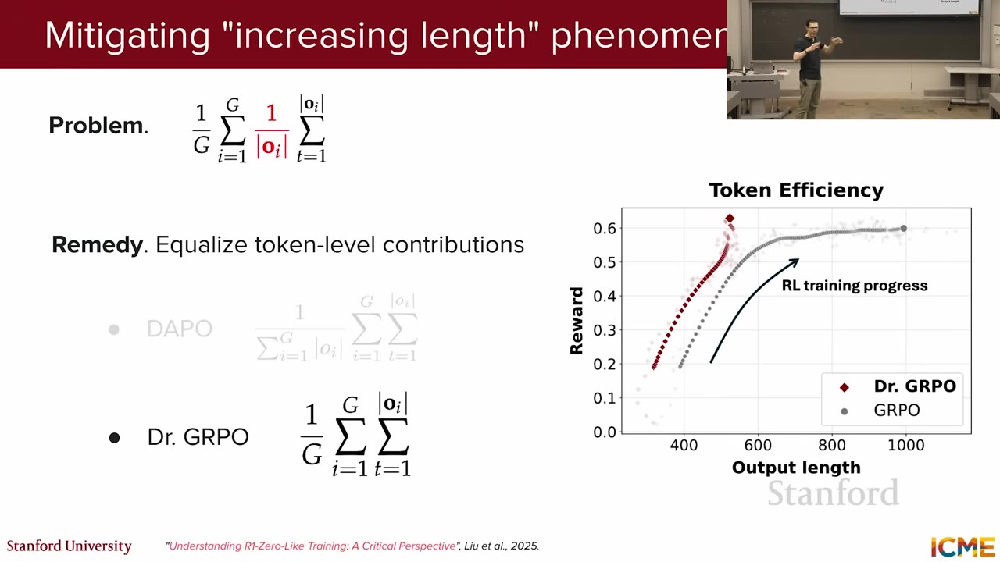
1/|o_i| と、対処法「token レベルの寄与を均等化する」。DAPO は正規化係数を群全体で共通にし、Dr. GRPO は係数を丸ごと外す。右：Token Efficiency のグラフで、同じ reward に到達するのに Dr. GRPO のほうが短い出力で済んでいる（赤の軌跡が左側に寄っている）。86:10| 手法 | やったこと（講義の説明） | 正規化の形 |
|---|---|---|
| DAPO （2025年3月） |
「token レベルの寄与を均等化した」。正規化係数がすべての token に共通になる | 1 / Σ_{i=1..G} |o_i|（群全体の token 総数で 1 回だけ割る） |
| Dr. GRPO （2025年3月） |
「GRPO done right だと思う。Dr. GRPO と書く。この論文は係数を丸ごと除去することを提案している」 | 1/|o_i| を削除（出力長に依存しない定数に置き換え） |
効果 ― 正解の長さは変わらず、誤答だけ短くなる
「reward を出力長の関数としてプロットすると、モデルが長さを際限なく増やすのをやめる。 さらに深く見ると、正解のサンプルの長さは GRPO のものと一致している。 だが不正解の解については、修正後の policy のほうが GRPO よりも平均長がずっと短い。 これがまさに意図した効果だ」。
ここが上手い。 「出力を短くする」修正が、正解の推論チェーンを削らずに、無駄に長い誤答だけを削っているという点が重要である。 Afshine は 「これは非常に重要な、人々が典型的に適用する修正だ」 と評価した。
短くすれば自動的に良くなるわけではない。 これらの修正が狙うのは、正解に必要な推論を一律に削ることではなく、誤答を長くする不当な誘因を外すことだ。 効果はモデル、データ、最大長、報酬設計にも依存する。図の実測結果を、すべての reasoning model に成り立つ保証としては読まない。
周辺情報：2 本の論文の正式名称と実測値。
- DAPO ＝ Decoupled Clip and Dynamic sAmpling Policy Optimization（Yu et al., 2025）。
論文が挙げる 4 つの技法は
Clip-Higher・Dynamic Sampling・Token-Level Policy Gradient Loss・Overlong Reward Shaping。 講義で扱った正規化の変更はこのうち 3 番目にあたる。式で書くと、従来の(1/G) Σ_i (1/|o_i|) Σ_t ℓ_{i,t}を(1 / Σ_i |o_i|) Σ_i Σ_t ℓ_{i,t}に置き換える。つまり応答ごとに長さ正規化して平均するのではなく、群内の有効 token 総数で一度だけ割る。 結果として Qwen2.5-32B で AIME 2024 が 50.0 点、DeepSeek-R1-Zero-Qwen-32B の 47.0 点を、半分の学習ステップ数で上回ったと報告している。 - Dr. GRPO ＝ Group Relative Policy Optimization Done Right（Liu et al., 2025）。
Afshine が「発音の仕方が分からない」と言っていたが、正式には「GRPO を正しくやる」の意。
この論文は
1/|o_i|（response-level length bias）に加えて、 advantage のstdによる除算（question-level difficulty bias）も除去している。 7B の base model から AIME 2024 で 43.3% を達成したと abstract で報告している。
23. その他の調整 ― 難易度バイアスと非対称クリップ
GRPO には長さ以外にも 2 つの調整点がある。報酬を群の標準偏差で割ると、 難易度の違う問題を不自然に同じ尺度へそろえることがある。対称 clip は低確率 token を育てにくい。 Dr. GRPO は前者を、DAPO の Clip-Higher は後者を修正する。
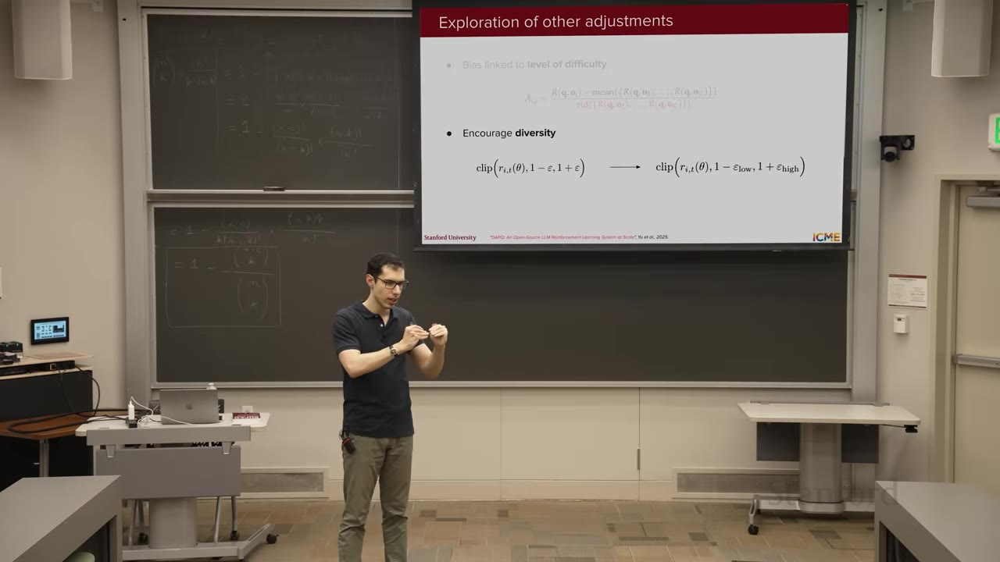
std 除算に起因する難易度バイアス。下：clip(r, 1−ε, 1+ε) を clip(r, 1−ε_low, 1+ε_high) に変えて多様性を促す。88:10調整 ①：難易度に紐づくバイアス（std の除算）
「advantage の式の中の標準偏差に関する修正がある。これは問題の難易度に関してバイアスがかかる。 たとえば非常に難しい問題があったとする。すると completion のほとんどは失敗になる。 すると標準偏差はあまり大きくならない。これが問題を引き起こしうる」。
周辺情報：なぜ std が小さいと問題なのか。
binary reward で正解率を p とすると、群の標準偏差は概ね sqrt(p(1−p)) である。
G 個中 1 個だけ正解、または 1 個だけ不正解のように p が 0 や 1 に近いと std は小さく、
その少数の例外を標準化が強く拡大する。結果として問題本来の学習価値ではなく、
群内の正解比率によって勾配の尺度が変わる。これが question-level difficulty bias である。
全回答が失敗または全回答が成功なら分子も全て 0なので、信号は増幅せず消える。
実装ではその群を除外するか、分母へ小さな epsilon を加えてゼロ除算を防ぐ。
Dr. GRPO 論文はこれを question-level difficulty bias と呼び、std による除算を外すことを提案している。
Hugging Face TRL では scale_rewards=False でこの除算を無効化できる。
調整 ②：多様性を促す非対称クリップ（Clip-Higher）
「もう 1 つよく検討される修正は、epsilon を 2 種類持つことだ。 epsilon は、1 回のイテレーションで policy をどれだけ変えられるかに影響する」。 そして Afshine は黒板でこう書いた。
1 + ε 掛ける pi_old だ。この pi_old が非常に小さければ、値を大きく変えることはできない」
「token の確率が非常に低いとき、成長のために小さな epsilon しか与えないのはある種フェアではない。
なぜならこの epsilon は掛け算されるからだ。
かといって epsilon を高くしすぎたくもない。大きな確率が突然 0 に落ちるのは避けたい。
だから下限と上限の間に非対称性を導入したいのだ」
周辺情報：Clip-Higher の実際の値と狙い。
これは DAPO の 4 技法のうち Clip-Higher にあたる。論文の設定は ε_low = 0.20、ε_high = 0.28。
つまり上げる方向だけ緩め、下げる方向は従来どおりにする。
狙いは Afshine の説明どおりで、確率の低い token（＝珍しい言い回しや別解のきっかけになりうる token）は、
対称なクリップだと (1+0.2) × 0.001 = 0.0012 のようにごくわずかしか上げられず、
探索が early に潰れて出力が単調になる（entropy collapse）。上限だけ緩めれば、低確率 token にも育つ余地が生まれる。
Hugging Face TRL の GRPOConfig にも epsilon_high パラメータがあり、
ドキュメントには DAPO の推奨値として 0.28 が明記されている。
Afshine の締めくくり：「今のはかなり多かった。何か質問は？ 時間が押している。講義の後に時間を取るので、質問があればそのときに。では Shervine に代わる」。
24. ここからは Shervine ― DeepSeek のレシピで全部つなげる
本節では、共通の V3-Base から通常の V3、純粋 RL の概念実証 R1-Zero、SFT と GRPO を重ねる完成版 R1 がどう分岐するかを図示し、 前半で学んだ検証報酬と方策最適化を実際のモデル系譜へ接続する。
従来の LLM パイプラインとの対比
「これまでの講義で見たのは、いわゆる伝統的な LLM です。インターネットのテキストで next token prediction をした pretrained base model から始めて、 SFT とその後の RL からなる alignment を行う。SFT は instruction tuning でした」。 DeepSeek のモデル群は、同じ V3-Base から 3 通りの後処理で分岐していると見ると全体像がつかみやすい。
pretrained base model
next token prediction のみ"] --> T1["SFT
instruction tuning"] T1 --> T2["RL
通常の RLHF"] T2 --> TV["V3
従来型モデル"] B0 --> Z1["GRPO のみ
SFT を一切やらない"] Z1 --> ZV["R1-Zero
proof of concept"] B0 --> FP["5 段階レシピ
SFT と GRPO を交互に"] FP --> FV["R1
full pipeline"]
図はクリックで拡大できます。
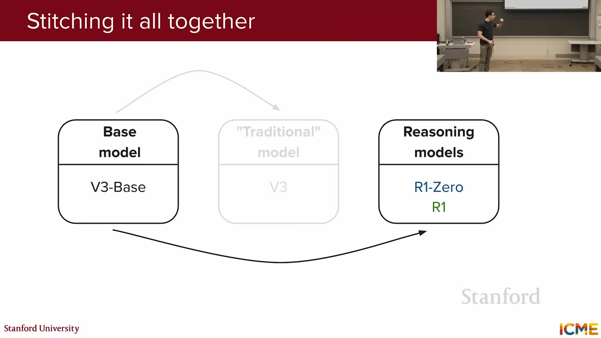
「DeepSeek R1 の論文が良い例なのは、複数のステージを踏むからです。まず、Afshine が言及した verifiable reward を適用したときに RL ステージがどれだけ強力になりうるかを示す。そしてそこで得られた性能の観察に基づいて、 R1 と呼ぶ非常に強力なモデルを得るための完全なパイプラインを組み立てる。 つまり、それぞれ proof of concept と完全な reasoning model です」。
スライドには R1-Zero に「Proof of concept」、R1 に「Full pipeline」というラベルが付けられている。
25. R1-Zero のレシピ ― SFT を一切やらない
本節では、DeepSeek-V3-Base に SFT を挟まず GRPO と検証可能報酬を直接適用して R1-Zero を作る 3 ステップを追い、 推論能力が創発する利点と、言語混在・可読性という純粋 RL の限界を説明する。
Step 1：伝統的な手法で pretrain（V3-Base）
「最新のアーキテクチャに、あらゆる工夫を盛り込んで next token prediction で学習した pretrained model から始めます。 講義で扱った mixture of experts を使い、DeepSeek V2 で導入した MLA（multi-latent attention）というトリックを再利用しています。 アーキテクチャを見ると、transformer block で pre-norm を使っている。典型的なベース LLM です」。
スライドには MoE / ~671B total, ~37B active と記載されている。
周辺情報：MoE と MLA の 1 行おさらい。
MoE（Mixture of Experts）は、FFN 層を多数の「エキスパート」に分割し、token ごとにごく一部だけを活性化する仕組み。
DeepSeek-V3 は総パラメータ 671B に対し、token あたりの活性パラメータは 37B。
つまり 671B 相当の知識容量を持ちながら、計算コストは 37B 相当で済む。
MLA（Multi-head Latent Attention）は、KV キャッシュを低次元の潜在ベクトルに圧縮して保持する attention 変種で、
長い文脈での推論メモリを大幅に削減する。推論チェーンが 1 万 token を超える reasoning model にとっては、これが効いてくる。
いずれも Lecture 2・3 で扱われた技術がそのまま使われている。
Step 2：SFT を飛ばして、いきなり GRPO
「そして、ここから面白くなります。SFT からなる alignment 戦略に進む代わりに、 next token prediction だけで学習された pretrained model からそのまま始める。 まだ何の supervision も見ていない状態です。そこに Afshine が説明した手法を reasoning データに適用します」。
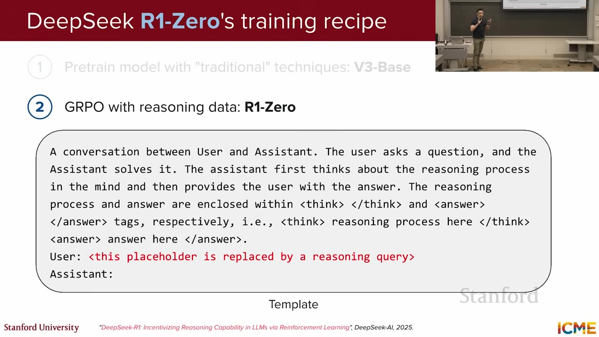
<think> で囲め。答えを出す準備ができたら <answer> で囲め」とフォーマット要件を平文で書いている。赤字部分がサンプルのプロンプトに差し替わる。93:30「報酬を見て、モデルにインセンティブを与えるのは アウトプット（入力に対する答え）と formatting に基づく報酬を増やすことだけです。 think token があれば formatting 側の報酬が与えられる」。
「そして論文には、モデルを学習させたテンプレートが正確に書かれています。非常にシンプルなものです」。
Step 3：結果と、見えてきた問題
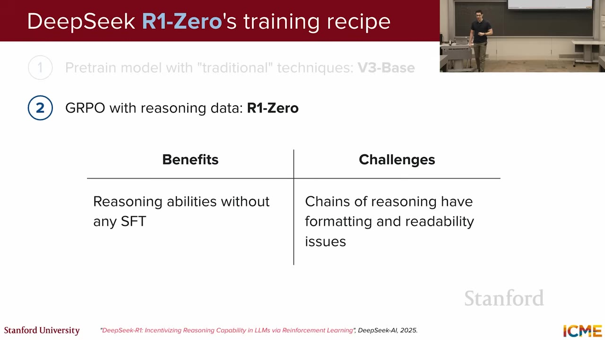
「『すべて解決した、素晴らしい、SFT なしで最高性能だ』と思うかもしれません。でもそう簡単ではない。 著者たちが推論チェーンを見たところ、2 種類の問題が見つかったのです」。
- 言語の混在。 「思考 token を出しているとき、複数言語が混ざることがあった」。
- 構文の問題。 「syntax の問題もあった」。
Shervine の仮説：「これは、その直前に強い supervision を一切見ていないからだと考えられます。 モデルには好きなように最適化する自由を与えたが、拠り所となる強い教師信号を背景として持っていないのです」。
周辺情報：R1-Zero の到達点と "aha moment"。 DeepSeek-R1 論文によれば、R1-Zero は AIME 2024 の pass@1 を 15.6% → 71.0% に引き上げ、 majority voting では 86.7%（o1-0912 と同等水準）に達した。 また、報酬に ニューラルな reward model（outcome / process いずれも）を使わなかったことを論文は明記しており、 その理由として reward hacking のリスク、reward model の再学習に必要な追加リソース、パイプラインの複雑化を挙げている。 さらに §13 で触れた "aha moment"（モデルが学習途中で自発的に「立ち止まって考え直す」振る舞いを獲得する現象）も、 この R1-Zero の学習中に観測されたものである。
26. R1 のレシピ ― 5 段階のフルパイプライン
本節では、V3-Base の pretraining、cold-start SFT、reasoning 向け GRPO、rejection sampling による大規模 SFT、 reasoning / general データを混ぜた最終 RL という DeepSeek-R1 の 5 段階を追い、R1-Zero の可読性と汎用性の弱点をどう補ったかを説明する。
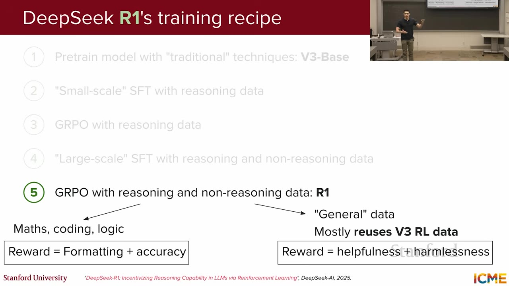
MoE・MLA・pre-norm
671B total / 37B active"] --> S2 S2["② 小規模 SFT（cold start）
R1-Zero が生成した長い CoT を
人手で書き直したデータ"] --> S3 S3["③ GRPO（reasoning データ）
Reward = formatting + accuracy
+ language consistency"] --> S4 S4["④ 大規模 SFT
reasoning 約600k（rejection sampling）
+ non-reasoning 約200k"] --> S5 S5["⑤ GRPO（reasoning + non-reasoning）
reasoning: formatting + accuracy
general: helpfulness + harmlessness
→ R1"]
図はクリックで拡大できます。
② cold start データ ― R1-Zero の出力を人手で直す
「彼らが cold start data と呼ぶものから始まります。R1-Zero の段階で CoT を生成させたのです。 そしてそれらの CoT には時に問題があった。そこで人間を使って一部を書き直し、 すべての CoT がフォーマットと言語の一貫性の点で準拠するようにしました。 そして、この『プロンプトと書き直された出力』のペアを SFT の学習データに使ったのです」。
データ量について Shervine は正直に述べる。「この段階のサンプル数は論文に数値が与えられていなかったと思います。 ただ論文の言い回しからすると、他のステージより数桁少ない可能性がある。おそらく（数千程度の）入出力ペアでしょう」。
周辺情報：論文の記述を確認すると。 DeepSeek-R1 論文は cold start データを "thousands of cold-start data"（数千件）と表現しており、 正確な件数は明示していない。Shervine の読みは論文の記述と一致している。
③ reasoning データでの GRPO ― 言語一貫性報酬の追加
「この段階が整ったら、R1-Zero でやったのと同じ RL ステージを続けます」。 ただし報酬に新しい項目が 1 つ加わる。
「思考の可読性が低いという問題に対抗するために、彼らが新しく導入したものがあります。 language consistency reward と呼ばれるもので、モデルが本当に言語を混ぜていないかを、非常に単純なヒューリスティックで評価します。 たしか、出力されたチェーンの中の、目標言語の token の比率だったと思います。 正しい言語の token の量を最大化するために、それを入れたのです」。
周辺情報：論文の定義。 DeepSeek-R1 論文は language consistency reward を「CoT における目標言語の単語の割合（the proportion of target language words）」と定義している。 Shervine の記憶どおりである。なお論文は、この報酬を入れると ベンチマーク性能はわずかに下がるが、 人間にとっての可読性が上がるためトレードオフとして受け入れた、という趣旨のことを述べている点も付記しておく。
④ 大規模 SFT ― rejection sampling で 600k、一般データで 200k
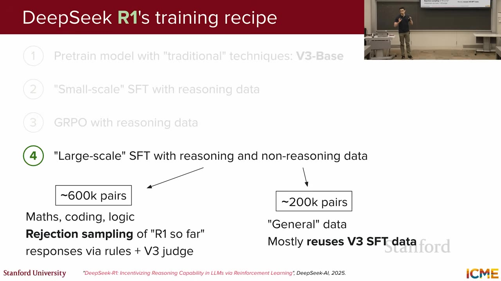
「最初の RL を通した後、非常に興味深い戦略で SFT を続けます。cold start のときより大きなスケールで行い、 今度は reasoning データと non-reasoning データの両方を混ぜます。 ユーザーがモデルに求めうる幅広いケースで有用になるようにするためです」。
- non-reasoning データ（約 200k）。 「non-reasoning 版のモデル、つまり V3 に使われたデータを一部リサイクルしました。約 200k ペアです。instruction tuning の回で述べた領域をカバーしています。広い範囲のトピックです」。
- reasoning データ（約 600k）。 「そこに reasoning に向けたペアを大量に加えました。比率は 3 対 1 です」。
rejection sampling とは何か
「reasoning のほうは rejection sampling という手法で生成されました。 reasoning 系の分野をカバーするプロンプトを取り、そこまでに学習してきたモデルを使って応答を生成させる。 そして judge を使って、一部の答えを採用し、他を棄却する。結果としてできるデータセットが非常に高品質になるようにするのです。 これを rejection sampling と呼んでいます。完璧でない答えをフィルタして落とすだけのことです」。
「LLM judge などで自動的にやった理由は、データの規模を考えれば当然でしょう。そしてこれらのヒューリスティックはその規模でうまく機能しました」。
周辺情報：rejection sampling は「自己生成データの品質フィルタ」。 モデル自身に大量の応答を生成させ、正解のものだけを残して SFT データにする ―― という考え方は、 「良質な人手データが足りない領域を、検証可能性で埋める」典型的な手法である。 数学やコードでは正誤が自動判定できるので、ルールベースでフィルタできる。 判定が難しいケースには DeepSeek-V3 を judge（LLM-as-a-judge）として使った、というのがスライドの "Rejection sampling of 'R1 so far' responses via rules + V3 judge" の意味である。 なお論文全体では、この段階の SFT データは reasoning 約 600k ＋ non-reasoning 約 200k で合計約 800k サンプルとされている。
⑤ 最終 RL ― helpfulness と harmlessness
「最後のステージは、non-reasoning モデルの学習パイプラインで登場するものを思い出させるかもしれません。 今回は reasoning データだけでなく non-reasoning データも混ぜます。 reasoning データには今まで見てきたのと同じ報酬。non-reasoning のほうは、LLM を有用（helpful）で無害（harmless）なアシスタントにする特性にモデルを揃えます」。
細かいが重要な違い。 「harmlessness の報酬は、出力された全 token に対して適用されました。答えの部分だけではありません。 なぜなら、答えの think セクションの中にある chain of thought も無害であってほしいからです。 一方 helpfulness のほうは、ユーザーが目にする部分に、より焦点を当てていました」
27. R1 の結果 ― 2 つのクラスタと、closed-source との比較
本節では、DeepSeek-R1 のベンチマーク表を reasoning / non-reasoning モデルの 2 群として読み、 公開された学習レシピで closed-source の推論モデルに競合できたことの技術的・実務的な意味を確認する。
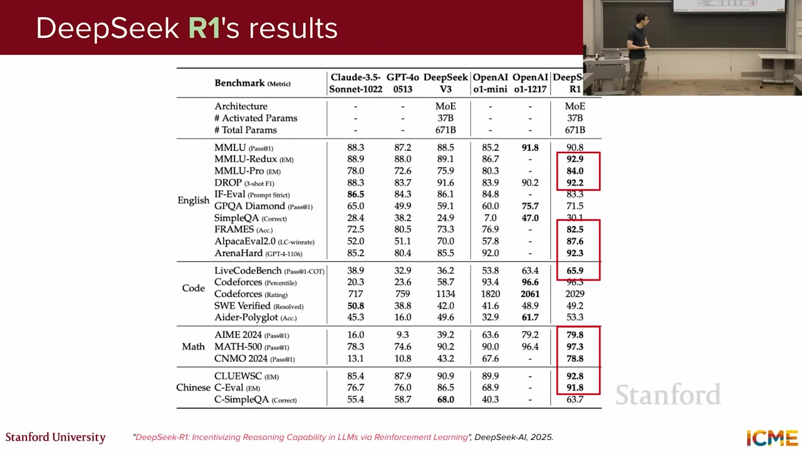
MMLU-Redux 92.9、MMLU-Pro 84.0、DROP 92.2、AlpacaEval2.0 87.6、ArenaHard 92.3、AIME 2024 79.8、MATH-500 97.3 などが赤枠で強調されている。アーキテクチャ行に MoE / 37B activated / 671B total が明記。103:10Shervine が読み取った 2 点。
- 2 つのクラスタが現れる。 「reasoning ベースのベンチマークでは、まず結果が 2 つのクラスタに分かれることに気づきます。 non-reasoning ベースのモデル群が一定の性能を持ち、reasoning ベースのモデル群は当然ながらそれよりずっと高い性能を持つ」。
- closed-source と競合できている。 「R1 は、reasoning ベースを謳う closed-source モデルに対してかなり競争力があった。 あの水準の性能を再現できたのは、Afshine が触れたとおり、非常に興味深い瞬間でした」。
28. distillation ― 大きなモデルの推論能力を小さなモデルへ
本節では、巨大な R1 が生成した thinking token 込みの応答系列を小型 Qwen / Llama に SFT する 応答系列による distillationを、次 token 分布を合わせる古典的蒸留と比較する。 小型モデルへ直接 RL をかけるより能力移植の計算効率と性能が高かった理由も実測値で確認する。
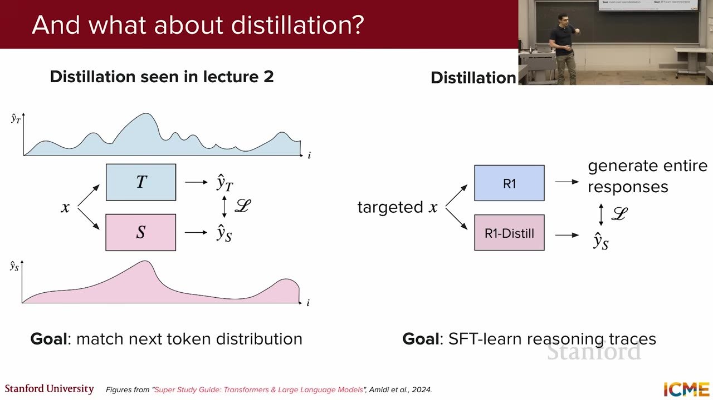
Lecture 2 の distillation との違い
| Lecture 2 の distillation | R1 で使われた distillation | |
|---|---|---|
| 前提 | 扱うデータが固定（next token prediction ならテキスト、SFT ならペア） | reasoning の SFT ペアはそのままでは存在しない |
| 生徒が合わせる対象 | 教師モデルの出力確率分布そのもの（ハードラベルでなく分布全体） | 教師（R1）が生成したtoken 系列そのもの |
| 手順 | 教師と生徒に同じ入力を通し、分布の距離を損失にする | ①R1 に thinking token 込みの応答をオフラインで生成させる → ②その系列を小型モデルに SFT で学習させる |
| スライドの Goal | match next token distribution | SFT-learn reasoning traces |
「教師モデル、ここでは R1 を使って、thinking token を含むサンプル応答をオフラインで生成させます。 そして第 2 段階で SFT を回し、教師よりずっと重みの少ない小さなモデルをそこに fit させる。 次 token の分布に fit させるのではなく、系列全体に fit させるのです。 教師が出力したのと同じ token の系列を予測しようとするだけです」。
結果 ― なぜ RL ではなく蒸留なのか
「結果は、より小さな reasoning model を謳う closed-source の代替と比べて、やはり非常に競争力があります。 たとえば o1-mini と比べても、数値は同等です」。
そして、受講生が抱くであろう疑問に Shervine 自身が答える。 「『同じ RL の手法をやればいいのに、なぜわざわざ蒸留するのか』と思うかもしれません。 実は著者たちは、小さいサイズのモデルでは、ゼロから直接学習させるより、知識を蒸留するほうが性能面で効率的だと確認しているのです」。
周辺情報：論文が示した具体的な比較。 DeepSeek-R1 論文は、この主張を実験で裏づけている。同じ Qwen-32B をベースに、 直接大規模 RL をかけた DeepSeek-R1-Zero-Qwen-32B は AIME 2024 で 47.0、 R1 から蒸留した DeepSeek-R1-Distill-Qwen-32B は 72.6。差は歴然としている。 蒸留のベースモデルとして使われたのは Qwen2.5-Math-1.5B / Qwen2.5-Math-7B / Qwen2.5-14B / Qwen2.5-32B / Llama-3.1-8B / Llama-3.3-70B-Instruct の 6 種類である。 スライドが結果に "Good" use of compute と書き添えているのはこの意味で、 「小さいモデルに RL を回す計算があるなら、大きいモデルの出力を蒸留したほうが得」というのが実務上の教訓になる。
Shervine の締めの一言：「よろしいでしょうか。それでは、良い週末を」。
29. 難所チートシート ― 詰まりやすい 10 点だけを 1 枚に
本節では、Pass@k、advantage、GRPO / PPO、KL、length / difficulty bias、DAPO / Dr. GRPO、Clip-Higher の 読み違えやすい 10 点を正しい理解と対にして要約し、最後に RLVR 学習の全体フローを 1 枚図へ統合する。
| # | 詰まりやすい点 | 正しい理解 |
|---|---|---|
| 1 | PPO の式の r を報酬だと思う | r は ratio（確率比）。pi_θ / pi_θ_old。報酬は別の記号（R や r_i）で書かれる。講義でも「紛らわしい記法」と明言 |
| 2 | Pass@k の式が突然出てきて意味不明 | 「1 − 全部外れる確率」＋「非復元抽出」の 2 つだけ。1 − C(n−c,k)/C(n,k)。k=1 を入れると c/n（ただの正解率）になることを確かめれば腑に落ちる |
| 3 | なぜ n 個生成して k を評価するのか | k 個だけだと推定の分散が大きすぎるから。n（例：200）生成して、そこから k 個を選ぶ確率計算をする |
| 4 | advantage が何なのか分からない | 「期待よりどれだけ良かったか」。PPO は value function で期待値を推定、GRPO は同じ問題の他の生成の平均で代用する |
| 5 | GRPO と PPO の違いが多すぎて覚えられない | 覚えるのは 1 つだけ：GRPO は value function（critic）を持たない。あとはそこから派生する話 |
| 6 | KL 項が GRPO と PPO で違う場所にある | GRPO は目的関数に明示的な項、PPO は実装上、報酬（→ advantage）に混ぜ込む。数学的な意図は同じ「reference から離れるな」 |
| 7 | 1/|o_i| がなぜ問題なのか | これは「その token が属する出力の長さ」だけで決まる重み。短い出力の token ほど強く更新される。結果、「短い誤答」が「長い誤答」より強く罰される＝長く間違えるほうが得、という悪い誘因になる |
| 8 | DAPO と Dr. GRPO の違い | どちらも 1/|o_i| を潰す。DAPO は群全体の token 総数で 1 回だけ割る（1/Σ|o_i|）、Dr. GRPO は係数自体を外す。Dr. GRPO はさらに std 除算も外す |
| 9 | std で割ると何がまずいのか | 極端な難問／易問では群内の報酬がほぼ一様になり std が小さくなる → advantage が過大に増幅される。これが難易度バイアス |
| 10 | ε を 2 つに分ける意味 | ratio の制約は pi_θ ∈ [(1−ε)pi_old, (1+ε)pi_old] という掛け算。低確率 token は上げ幅が絶対値で見て極小になるので、上限だけ緩める（Clip-Higher）と探索が保たれる |
1 枚図：verifiable reward による reasoning 学習の全体像
（数学・コード）"] --> G["Policy Model が
G 個の completion を生成"] G --> F1["① format 報酬
＜think＞ タグはあるか？"] G --> F2["② accuracy 報酬
テスト通過 / 答え一致？"] F1 --> SUM["r_i = ① + ②
（+ language consistency）"] F2 --> SUM SUM --> ADV["群内で正規化
A_i = (r_i − mean) / std"] ADV --> UPD["GRPO 損失で
Policy Model を更新
（clip + KL penalty）"] UPD --> G REF["Reference Model
（SFT・凍結）"] -.->|KL penalty| UPD NOTE["reward model は不要
value model も不要"] -.-> SUM
図はクリックで拡大できます。
30. 講義内のやりとり ― 受講生の質問と回答
本節では、CoT の意味、日付などの文脈、hidden CoT、temperature、GRPO の群相対評価について、 講義中の質問と回答を時系列で再掲し、本文の説明と対応づける。
| 時点 | 質問 / 発言 | 回答の要旨 |
|---|---|---|
| 16:00 頃 | 「chain of thought とは何か」（教員からの問いかけ） | 受講生：「一発で答える代わりに、段階を踏んで考えること」。Afshine：「素晴らしい答え」 |
| 16:45 頃 | 「その質問（クマの年齢）には文脈が必要では？」 | 日付は典型的に preamble に入る。それ以外の未知の文脈をどう取得するかは Lecture 7 のテーマ。今日は reasoning model の「拡張」であって根幹ではないと位置づける |
| 24:40 頃 | 「このスクリーンショットは reasoning model か？」（教員からの問いかけ） | キーワードは "Thinking"。UI が思考プロセスを見せていること。ただし表示されるのは thought summary であって生の推論チェーンではない |
| 34:50 頃 | 「特定の temperature を選ぶのか？」 | 「スライドがあるので数枚後まで質問を保留させて」→ §11 で回答。多様性のために temperature を使い、大きすぎず小さすぎずを選ぶ。論文は必ず使用した temperature を明記する |
| 1:03:00 頃 | 「（GRPO は）なぜそうするのか？」 | 従来 RL は LLM 以前の設計（PPO は 2017 年）。高価な joint model（value function）を持たずに相対評価するという発想。簡単な問題での高報酬と、難問での高報酬を区別したい |
| 1:14:30 頃 | （質問なし） | Afshine：「質問がないのは、自分にとってはむしろアラームだ」「非常にテクニカルで、クラス全体で一番難しいパート。消化に時間がかかるのは普通」「録画を何度か見直すことを勧める」 |
31. 用語集
本節では、本文で導入した推論時計算、評価指標、報酬設計、方策最適化、DeepSeek の学習工程を、 略語の展開・短い定義・講義内で必要になった理由の 3 列で引き直す。
| 用語 | 意味 | この講義での位置づけ |
|---|---|---|
| Reasoning model | 答えの前に推論チェーンを出力するモデル。出力＝推論＋答え | 今回の主題 |
| Chain of Thought (CoT) | 段階を踏んで考えさせる手法（Wei et al., 2022） | reasoning model の核となるアイデア。「これを大規模にやる」 |
| Test-time scaling | 推論時に使う計算量を増やして性能を上げること | スライドのセクション名。token を多く出す＝計算を多く使う |
| Compute budget | 応答生成にモデルへ与える計算予算 | thinking の長さを制御する概念 |
| Reasoning token / hidden CoT | 最終回答前の内部思考列を構成する token／UI に生の列を表示しない運用 | 非表示でも context と計算を使い、output token として課金される |
| Zero-shot / few-shot CoT | 手順を促す指示だけを与える方式／解き方付きの例を示す方式 | reasoning model 以前の CoT prompting の 2 形態 |
| Pass@k | k 回試して少なくとも 1 回成功する確率。1 − C(n−c,k)/C(n,k) | reasoning ベンチマークの主指標 |
| Pass@1 | 1 回の生成が成功する確率＝正解率 | 単一生成を重視する用途向け |
| Cons@k | k 個生成し多数決した答えを ground truth と比較 | self-consistency と同発想 |
| Self-consistency | 複数の推論経路を生成し、最頻の最終解を採る多数決 | 外部 verifier がないときも単発生成より頑健にする |
| Best-of-N | N 個の候補を生成し、verifier / reward model の最高得点を選ぶ | Pass@k と違い、実際に 1 候補を選抜する推論時探索 |
| Verifiable reward | 機械的に正誤判定できる報酬（テスト通過・答え一致） | reward model なしで RL を回せる理由 |
| RLVR | Reinforcement Learning with Verifiable Rewards（検証可能報酬による強化学習） | 数学・コードの自動判定を直接報酬にする R1 系の軸 |
| Format reward | <think> タグの有無を確認する報酬 | Reward 1 |
| Accuracy reward | 解が正しいかを確認する報酬 | Reward 2 |
| ORM / PRM | Outcome Reward Model は最終結果、Process Reward Model は途中の各手順を採点 | R1 は reward hacking と複雑化を避けるため、どちらも使わず RLVR を採用 |
| Process supervision | 正しい途中手順のラベルで PRM やモデルを監督する方法 | 密な信用割当ができるが、手順ラベルの作成コストが高い |
| Language consistency reward | CoT 中の目標言語の単語割合 | R1 で言語混在を抑えるために追加 |
| GRPO | Group Relative Policy Optimization。群内の平均報酬をベースラインにする RL 手法 | reasoning 学習のデファクト |
| PPO | Proximal Policy Optimization（Schulman et al., 2017） | 比較対象。value function が必要 |
| Value function / critic | 「ここから先を生成し続けたときの報酬」を予測するモデル | PPO には必要、GRPO には不要 |
| GAE | Generalized Advantage Estimation。PPO で advantage を求める手法 | 「複雑な式」として言及のみ |
| Advantage | 「期待よりどれだけ良かったか」 | 両アルゴリズムが最大化する量 |
| Ratio | pi_θ / pi_θ_old。報酬ではない | clip の対象。記号の罠 |
| Clipping | ratio を [1−ε, 1+ε] に切り詰めて更新幅を制限 | GRPO・PPO 共通 |
| Clip-Higher | ε_low と ε_high を分ける非対称クリップ | 多様性を促す調整（DAPO） |
| KL divergence | 2 つの分布のずれ。reference から離れすぎるのを防ぐ | GRPO は明示項、PPO は報酬に混入 |
| Length bias | 1/|o_i| による「長い誤答のほうが罰が軽い」歪み | 出力長が伸び続ける原因の仮説 |
| Reward hacking | 意図した能力ではなく報酬関数の抜け道を学んで点数を稼ぐこと | reward model の弱点や length bias が招きうる |
| Overthinking | 簡単な問題にも必要以上の推論 token と計算を使うこと | 動的な thinking budget が必要になる理由 |
| DAPO | Decoupled Clip and Dynamic sAmpling Policy Optimization | token レベルの寄与を均等化 |
| Dr. GRPO | GRPO Done Right。1/|o_i| と std 除算を除去 | length bias と difficulty bias の修正 |
| Budget forcing | Wait を挿入して思考を延長／終了デリミタで打ち切る | s1 論文の手法 |
| Continuous thought | 思考を token ではなく隠れ表現で持つ | Coconut 論文の方向性 |
| Cold start data | R1-Zero の CoT を人手で書き直した少量の SFT データ | R1 レシピの第 2 段階 |
| Rejection sampling | 自己生成した応答をフィルタして高品質データを作る | R1 レシピの第 4 段階（約 600k） |
| Aha moment | 学習中にモデルが自発的に「立ち止まって考え直す」挙動を獲得する現象 | DeepSeek-R1 論文が命名 |
| MoE / MLA | Mixture of Experts / Multi-head Latent Attention | V3-Base のアーキテクチャ（671B total / 37B active） |
32. 関連レポート
本節では、本講義の前提となる Lecture 1〜5 と、GRPO・蒸留・オープンモデル運用を実装面から補う既存レポートを、 どの節の理解に役立つかとともに案内する。
- Stanford CME295 Lecture 5「LLM Tuning」日本語要約 ― 本講義の直接の前編。RLHF、Bradley-Terry、reward model、advantage・value function・GAE、PPO-Clip / PPO-KL Penalty、Best-of-N、DPO。今回の冒頭 12 分の復習パートはこの内容を指している。今回の内容で詰まったらまずここに戻るべき。
- Stanford CME295 Lecture 4「LLM Training」日本語要約 ― pretraining、scaling law、SFT、LoRA・QLoRA。§1 の「pretraining → SFT」の詳細。
- Stanford CME295 Lecture 3「Large Language Models」日本語要約 ― CoT・self-consistency・temperature・MoE・MLA の回。§4（CoT）、§11（temperature）、§25（MoE / MLA）の前提知識がすべてここにある。
- Stanford CME295 Lecture 2「Transformer-Based Models & Tricks」日本語要約 ― distillation（DistilBERT）と pre-norm の回。§28 の「Lecture 2 で見た distillation」の中身。
- Stanford CME295 Lecture 1「Transformer」日本語要約 ― Attention と Transformer の基礎。
- Post-training reasoning models on Microsoft Foundry（DEM321）日本語要約 ― GRPO を実際のクラウド環境で回す実務編。今回の理論をそのまま実装に落とす話。
- Post-training and deploying open-source reasoning models 日本語要約 ― reasoning model の post-training とデプロイのパイプライン全体。
- Distilling models with fine-tuning（DEM322）日本語要約 ― §28 の distillation を実務でやる話。
- Shipping custom models at scale 日本語要約 ― fine-tuning と推論の運用面。
- Hugging Face open models to production（DEM320）日本語要約 ― オープンモデル（Qwen / Llama 系）を本番に載せる話。R1-Distill 系モデルの実運用に関連。
33. 出典・一次資料
本節では、講義動画・公式スライドを直接資料として示し、CoT、Pass@k、GRPO、DeepSeek-R1、DAPO、Dr. GRPO の主張と 料金・実装上の補足を検証した原論文・公式ドキュメントを用途別に列挙する。
本レポートの直接の出典
- Stanford CME295 Transformers & LLMs | Autumn 2025 | Lecture 6 - LLM Reasoning（Stanford Online、2025年11月14日公開・講義 2025年11月7日／1:47:10）
- 公式スライド: fall25-cme295-lecture6.pdf（cme295.stanford.edu・148ページ）
- CME295 Syllabus（コース全体のスケジュールとスライド一覧）
- コース再生リスト（YouTube）
講義スライドが挙げた原論文
- Wei et al., 2022 — “Chain-of-Thought Prompting Elicits Reasoning in Large Language Models”（CoT の原典。arXiv:2201.11903）
- Chen et al., 2021 — “Evaluating Large Language Models Trained on Code”（Codex 論文。pass@k と HumanEval（164 問）の出典。arXiv:2107.03374）
- Shao et al., 2024 — “DeepSeekMath: Pushing the Limits of Mathematical Reasoning in Open Language Models”（GRPO の原典。arXiv:2402.03300）
- DeepSeek-AI, 2025 — “DeepSeek-R1: Incentivizing Reasoning Capability in LLMs via Reinforcement Learning”（R1-Zero / R1 のレシピ、aha moment、distillation の出典。arXiv:2501.12948）
- Yu et al., 2025 — “DAPO: An Open-Source LLM Reinforcement Learning System at Scale”（arXiv:2503.14476）
- Liu et al., 2025 — “Understanding R1-Zero-Like Training: A Critical Perspective”（Dr. GRPO。arXiv:2503.20783）
- Muennighoff et al., 2025 — “s1: Simple test-time scaling”（budget forcing。arXiv:2501.19393）
- Hao et al., 2024 — “Training Large Language Models to Reason in a Continuous Latent Space”（Coconut / continuous thought。arXiv:2412.06769）
- Han et al., 2024 — “Token-Budget-Aware LLM Reasoning”（TALE / dynamic budget。arXiv:2412.18547）
- DeepSeek-AI, 2024 — “DeepSeek-V3 Technical Report”（V3-Base のアーキテクチャ図の出典。arXiv:2412.19437）
- Amidi et al., 2024 — “Super Study Guide: Transformers and Large Language Models”（distillation 図の出典としてスライド脚注に記載）
本レポートが補足のために参照した一次資料・公式ドキュメント
- openai/human-eval — evaluation.py（pass@k の数値的に安定な実装
1.0 - np.prod(1.0 - k / np.arange(n - c + 1, n + 1))） - OpenAI — Reasoning models（“reasoning tokens are not visible via the API, they still occupy space in the model's context window and are billed as output tokens”）
- Anthropic — Extended thinking / Summarized thinking（“You're charged for the full thinking tokens generated by the original request, not the summary tokens”）
- Google — Gemini thinking（“When thinking is turned on, response pricing is the sum of output tokens and thinking tokens”）
- Hugging Face TRL — GRPO Trainer（
num_generations・beta・epsilon・epsilon_high（DAPO 推奨 0.28）・loss_type（grpo/dr_grpo/dapoほか）・scale_rewards） - deepseek-ai/DeepSeek-V3 — README（MoE・671B total / 37B activated・MLA・DeepSeekMoE）
- simplescaling/s1（s1K データセット 1,000 例）